GHS402 Sketchy Micro Pictures
Every video from the GHS402 Micro list (MD4), with its Sketchy mnemonic scene and the explanation of every numbered icon. Check off organisms as you review them — progress is saved in this browser. Use the search box to jump to a specific bug. Click the expand icon on an image to view it full screen.
1. Herpes Simplex Virus Types 1 & 2 (Herpesviridae)
- 1Hermes sprinting: Herpes simplex virus type 1 (HSV-1) and herpes simplex virus type 2 (HSV-2) (DNA viruses in the Herpesviridae family); they are highly contagious, and spread mainly via direct contact with infected skin, mucosa, or body fluids, as well as vertically
- 2Cool colors: HSV-1 and HSV-2 are DNA viruses
- 3Enveloping toga: HSV-1 and HSV-2 are enveloped viruses
- 4Double road lines: HSV-1 and HSV-2 are double-stranded, linear DNA viruses
- 5Cow spots: Intranuclear eosinophilic inclusions, known as Cowdry type A bodies, are characteristic histopathological findings in cells infected with HSV (as well as CMV and VZV); these cells typically show a Clear nuclear halo, multinucleation, nuclear molding, and chromatin margination, usually in keratinocytes or neurons
- 6Torch: HSV-1 and HSV-2 are part of the TORCHeS group of infections—T: Toxoplasma; O: Other (varicella-zoster virus, parvovirus B19, Zika virus, HIV); R: Rubella; C: Cytomegalovirus (CMV); H: Herpes simplex virus (HSV); S: Syphilis—a group of infections that are transmitted vertically through the placenta
- 7Red lips: The primary infection of HSV-1 often manifests as gingivostomatitis, characterized by painful vesicular lesions and ulcerations within the oral cavity and surrounding perioral region
- 8Lip ulcers: Herpes labialis (cold sores) presents as clusters of small, painful vesicles on a red base along the lip margin (vermilion border) that may rupture into shallow ulcers and heal with a yellow crust; most commonly caused by HSV-1
- 9Serpent caduceus: Keratoconjunctivitis, primarily attributable to HSV-1, presents with ocular pain, photophobia, redness, tearing, and decreased visual acuity; fluorescein slit-lamp examination, branching (dendritic or "serpiginous') corneal ulcers are diagnostic for herpes infection.
- 10Red wings on helmet near temples: HSV-1 encephalitis, the most common cause of sporadic encephalitis in the U.S., causes hemorrhagic temporal lobe necrosis, leading to fever, seizures, altered mental status, personality changes, and olfactory hallucinations due to limbic system involvement
- 11Black helmet HSV-1 encephalitis, the most common cause of sporadic encephalitis in the U.S., causes hemorrhagic temporal lobe necrosis, leading to fever, seizures, altered mental status, personality changes, and olfactory hallucinations due to limbic system involvement
- 12Crazy eyes: HSV-1 encephalitis, the most common cause of sporadic encephalitis in the U.S., causes hemorrhagic temporal lobe necrosis, leading to fever, seizures, altered mental status, personality changes, and olfactory hallucinations due to limbic system involvement
- 13Three helmet gems: Latent HSV-1 in the trigeminal ganglia can be reactivated by stress, sunlight, fever, or immunosuppression, leading to cold sores, keratoconjunctivitis, or, rarely, temporal lobe encephalitis
- 14Dew drops on roses: HSV lesions appear as painful grouped vesicles or pustules on an erythematous base and are sometimes likened to "dew drops on a rose petal"; they may rupture to form shallow ulcers, crust over as they heal, and recur due to viral latency
- 15Dew drops on finger: Herpetic whitlow is an HSV-induced condition characterized by painful, clustered vesicular lesions on an erythematous base on one or more fingers
- 16Target stamps on hand and arm: Erythema multiforme is a hypersensitivity reaction associated with certain medications and infections (such as HSV) that presents with distinct target lesions, with a central dusky area, pale edematous zone, and outer erythematous ring, on the back of the hands and feet and move centrally
- 17Ruffles by groin: During an initial genital herpes outbreak, often caused by HSV-2, patients may present with painful, grouped vesicles on an erythematous base in the genital or perianal region, often with shallow ulcers and tender inguinal lymphadenopathy
- 18Codpiece: HSV-2 primarily establishes latency in the sacral ganglia, and reactivation can cause recurrent genital or perianal lesions
- 19Neck brace: HS\V-2 infections have been linked to cases of aseptic meningitis in both adolescent and adult populations, particularly during primary genital infection, presenting with headache, fever, neck stiffness, and lymphocytic pleocytosis in adolescents and adults
- 20Tank + giant spots: The Tzanck smear was used historically to visualize multinucleated giant cells infected with HSV; however, multinucleated giant cells can also be seen in other conditions like VZV infections, and specific identification requires other tests, such as PCR or viral culture
- 21Violet recycling bin: Prophylactic measures against HSV outbreaks include the use of valacyclovir and acyclovir
Show the original legend picture
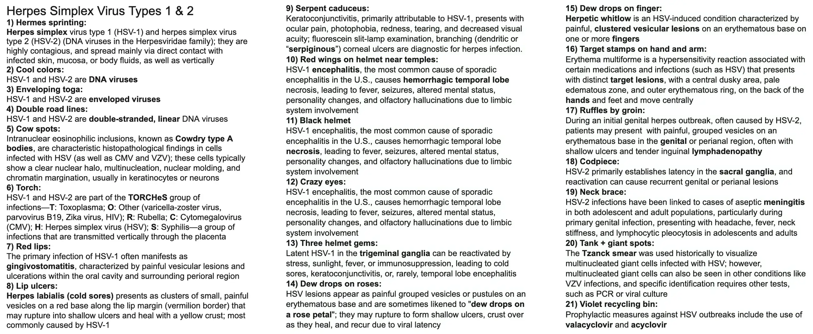
2. Norovirus & Norwalk Virus (Caliciviridae)
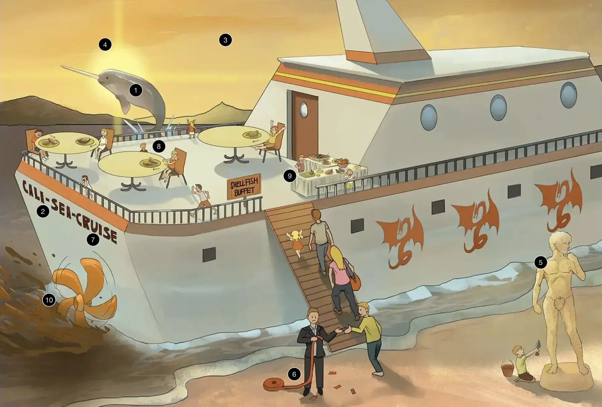
- 1Narwhal: Noroviruses (positive-sense RNA viruses in the Caliciviridae family)
- 2"Cali-sea-cruise": Noroviruses are a part of the Caliciviridae family
- 3Warm colors: Noroviruses are positive-sense RNA viruses
- 4Positive sun: Noroviruses are positive-sense RNA viruses
- 5Statue of David: Noroviruses lack envelopes, classifying them as naked viruses
- 6Roll of tickets: Upon entering the host cell, the entire genome of noroviruses is translated into a long single polyprotein, which is subsequently cleaved into functional units by proteases
- 7Cruise ship: Norovirus outbreaks commonly occur in confined spaces like cruise ships, day care centers, and schools
- 8Children: Norovirus outbreaks commonly occur in confined spaces like cruise ships, day care centers, and schools
- 9Shellfish buffet: Norovirus outbreaks commonly occur from consuming contaminated shellfish or food handled by multiple people in settings like buffets, cruise ships, and cafeterias
- 10Mud spray: Norovirus infection often presents with acute, severe watery diarrhea, often described as "explosive," accompanied by nausea, vomiting, stomach cramps, low-grade fever and malaise, with symptoms developing within 12—48 hours and resolving in 1-3 days
Show the original legend picture
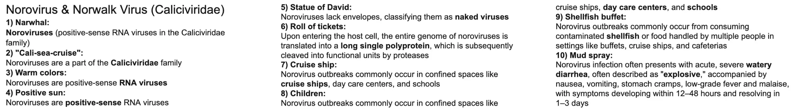
3. Rotavirus & Colorado Tick Fever Virus (Reoviridae)
- 1Rio Grande Prix: Reoviruses (e.g., rotavirus, Colorado tick fever virus) are RNA viruses
- 2Warm colors: Reoviruses (e.g., rotavirus, Colorado tick fever virus) are RNA viruses
- 3Statue of David: Reoviruses virus lack an envelope, classifying them as naked viruses
- 4Double-stranded rope: Reoviruses are double-stranded RNA viruses, and therefore are not classified as positive- or negative-sense and replicate in the cytoplasm
- 5No positive sun + no moon with negative sign-shaped clouds: Reoviruses are double-stranded RNA viruses, and therefore are not classified as positive- or negative-sense and replicate in the cytoplasm
- 611 boats: Reoviruses have segmented genomes (9—12 dsRNA segments); rotavirus specifically has 11 segments
- 7Boat rotor: Rotavirus (a double-stranded RNA virus in the Reoviridae family)
- 8Brown water: Rotavirus causes gastroenteritis, typically presenting with profuse watery diarrhea
- 9"Nine SPeed 4 stroke": Rotavirus watery diarrhea is mediated by the NSP4 (Nonstructural Protein 4) enterotoxin, which increases chloride (Cl) permeability, causing Cl secretion into the intestinal lumen; Na' follows to maintain electroneutrality, water follows Na+ osmotically, and villous epithelial destruction further exacerbates fluid and electrolyte loss
- 10"Chlo-rider" boat: Rotavirus watery diarrhea is mediated by the NSP4 (Nonstructural Protein 4) enterotoxin, which increases chloride (CI) permeability, causing Cl secretion into the intestinal lumen; Na* follows to maintain electroneutrality, water follows Na+ osmotically, and villous epithelial destruction further exacerbates fluid and electrolyte loss
- 11Snow-capped mountains: Rotavirus incidence peaks in winter in temperate climates because the virus survives longer in cold, low-humidity conditions and increased indoor crowding facilitates fecal-oral transmission
- 12Kids: Children, especially <5 years old, are most susceptible to rotavirus
- 13"#1" foam finger: Rotavirus is the leading cause of severe diarrhea in young children worldwide
- 14"Welcome to Colorado" + tick: Colorado tick fever virus (a dSRNA virus in the Reoviridae family)
- 15Vomiting + sweating: Colorado tick fever virus infection presents with flu-like symptoms—including fever, chills, headache, myalgias, fatigue, anorexia, and vomiting—and occurs in high-elevation areas of the western United States (Rocky Mountain states); unlike Rocky Mountain spotted fever, it typically does not cause a rash
- 16Water bottle: Treatment for rotavirus and Colorado tick fever virus is supportive, primarily oral rehydration therapy
- 17"Live" + syringe microphone: The rotavirus vaccine is a live attenuated oral vaccine, available as RotaTeg (pentavalent, 3 doses at 2, 4, and 6 months) or Rotarix (monovalent, 2 doses at 2 and 4 months); first dose required before 15 weeks of age and the series completed by 8 months, to reduce the risk of intussusception
- 18Telescope: Rotavirus vaccine can rarely cause intussusception (bowel "telescoping' in on itself) because viral replication in the gut leads to Peyer's patch hypertrophy, which can act as a lead point for the intestine to telescope into itself
Show the original legend picture
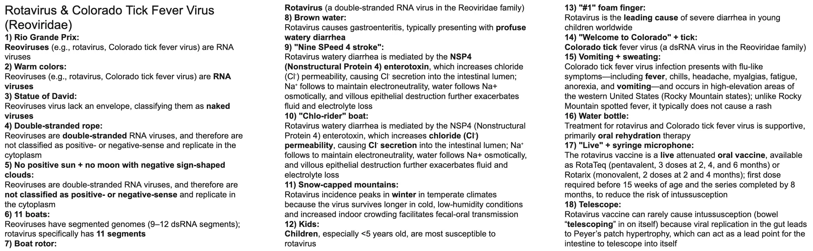
4. Giardia lamblia
- 1"Giardia jungle ride": Giardia intestinalis, previously known as G. lamblia or G. duodenalis (an intestinal protozoan)
- 2Poopy water: Giardia intestinalis cysts (the infectious stage of the parasite) are transmitted via the fecal-oral route, often through contaminated water or food
- 3Bubbles in water: Giardia intestinalis forms infectious cysts, which are shed in the feces of infected individuals, contaminating water and food sources
- 4Backpacks: Giardiasis is a concern for individuals consuming water from natural sources, such as hikers and campers, due to the risk of ingesting contaminated water
- 5Water bottle + poopy water: Poorly purified or untreated water is a common vehicle for Giardia intestinalis transmission
- 6Campers holding noses: The clinical presentation of giardiasis typically includes foul-smelling, greasy, non-bloody diarrhea, along with bloating, abdominal discomfort, and flatulence
- 7Yellow stool: Giardia trophozoites attach to the small intestinal mucosa, disrupting the structure and function of the intestinal villi, leading to malabsorption, steatorrhea (excess fat in the stools), diarrhea, and potentially deficiencies of the fat-soluble vitamins (A, D, E, K)
- 8Trophozoite shields: The flagellated trophozoites of Giardia intestinalis have a distinctive pear-shaped morphology, with a broad anterior end and a tapering posterior end, two prominent nuclei that resemble eyes, multiple flagella for motility, and a ventral adhesive disc that allows them to attach to the intestinal mucosa
- 9Shields in water: Detection of Giardia intestinalis cysts or trophozoites in stool specimens confirms a giardiasis diagnosis
- 10"O&P": Stool ova and parasite (O&P) examination and enzyme-linked immunosorbent assay (ELISA) for Giardia antigens are reliable methods for diagnosing giardiasis
- 11"ELISA" boat: Stool ova and parasite (O&P) examination and enzyme-linked immunosorbent assay (ELISA) for Giardia antigens are reliable methods for diagnosing giardiasis
- 12Metro: Effective treatments of giardiasis include metronidazole, tinidazole, and nitazoxanide
Show the original legend picture
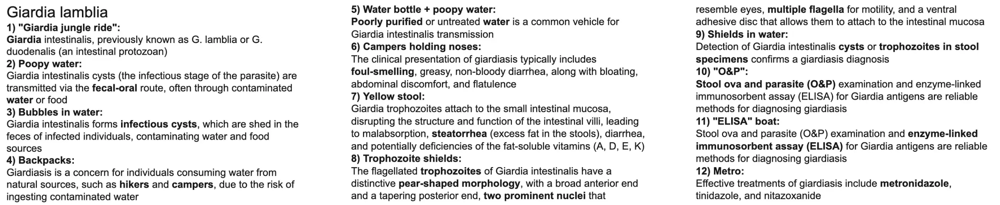
5. Entamoeba histolytica
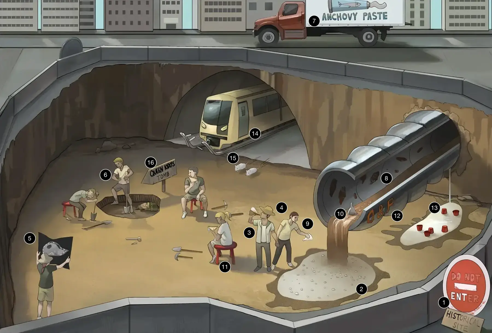
- 1"Do not ENTer - HiSTorical site": Entamoeba histolytica (an intestinal protozoan that causes amebiasis)
- 2Bubbles in water: Entamoeba histolytica exists in two main forms: the trophozoite, which is active, motile, and invasive, and the cyst, which is infectious, environmentally resistant, and passed through stool
- 3Drinking bubbly water: Amebiasis is primarily acquired through ingestion of food or water contaminated with Entamoeba histolytica cysts
- 4Holding hands: Entamoeba histolytica can be transmitted sexually through anal-oral contact, as the parasite is spread via the fecal-oral route
- 5Right lobe dig site: Once inside the body, the parasite can cause hepatic amebiasis, with the most common extraintestinal manifestation being a liver abscess, typically occurring in the right hepatic lobe
- 6Clutching right side: The clinical presentation of hepatic amebiasis often includes right upper quadrant pain, fever, hepatomegaly, malaise, nausea and lab tests may show leukocytosis and elevated liver enzymes
- 7Anchovy paste truck: Aspirates from amebic liver abscesses typically have a thick, "anchovy paste" appearance, with the reddish-brown color resulting from necrotic hepatocytes; viable trophozoites are usually absent from the aspirate and are found at the periphery of the abscess
- 8Colon drainage pipe with rust spots: Entamoeba histolytica infection in the colon can cause ulcers that have a narrow neck at the mucosal surface and a broader base in the submucosa, giving them their characteristic "flask" appearance; most commonly found in the cecum and ascending colon but can occur anywhere in the large intestine
- 9Flask water bottles: The presence of flask-shaped ulcers is a hallmark of invasive amebiasis, observable through histopathological examination
- 10Flask in colon pipe: Intestinal biopsy may show flask-shaped lesions in intestinal amebiasis
- 11Red stools: Bloody diarrhea in amebiasis is a result of ulceration of the intestinal mucosa caused by Entamoeba histolytica, which invades the mucosa and submucosa, causing tissue necrosis
- 12"O&P" pipe: Diagnosis of Entamoeba histolytica infection can be confirmed by identifying cysts (round or oval, containing up to 4 nuclei, typically found in formed stools) or trophozoites (motile, feeding stage, more commonly seen in liquid stools during acute infection) in stool samples using an Ova and Parasite (O&P) examination
- 13Trophozoite puddle + red cups: The presence of Entamoeba histolytica trophozoites containing ingested RBCs in stool or tissue samples is diagnostic of invasive amebiasis
- 14Metro: Metronidazole (or tinidazole) is the primary treatment for amebiasis, killing active trophozoites, but a luminal agent is needed to clear cysts
- 15Pair of mice: Paromomycin and iodoquinol are luminal agents used to eradicate residual Entamoeba histolytica cysts from the intestinal lumen after treatment with metronidazole or tinidazole
- 16"Queen lodo's Tomb": Paromomycin and iodoquinol are luminal agents used to eradicate residual Entamoeba histolytica cysts from the intestinal lumen after treatment with metronidazole or tinidazole
Show the original legend picture
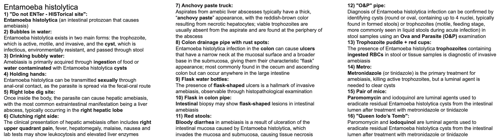
6. Cryptosporidium spp
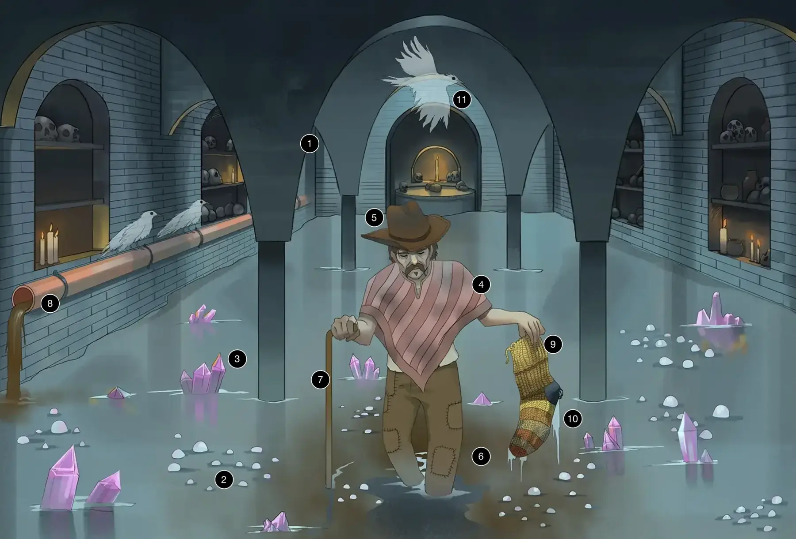
- 1Flooded crypt: Cryptosporidium spp. (intestinal protozoa)
- 2Bubbles: Cryptosporidium spp. protozoa form infectious oocysts that are excreted in stool and transmitted via the fecal-oral route typically ingestion of oocyst-contaminated water or food; they are environmentally resistant, surviving for long periods of time
- 3Multifaceted amethyst gems scattered in water: Cryptosporidium oocysts, containing four motile sporozoites, are acid-fast or partially acid-fast, appearing pink-red against a blue background with modified Ziehl—Neelsen stain, enabling microscopic stool diagnosis
- 4Pink acid-fast poncho: Cryptosporidium oocysts, containing four motile sporozoites, are acid-fast or partially acid-fast, appearing pink-red against a blue background with modified Ziehl—Neelsen stain, enabling microscopic stool diagnosis
- 5Cowboy hat + wading through dirty water: Risk factors for Cryptosporidium infection include drinking or swimming in contaminated water and occupational or recreational contact with animals
- 6Brown water: Cryptosporidiosis is a significant cause of diarrheal illness, usually self-limited in immunocompetent hosts but capable of causing severe, chronic, watery diarrhea in immunocompromised individuals, particularly those with advanced HIV infection
- 7Immunocompromised cane: Cryptosporidiosis is a significant cause of diarrheal illness, usually self-limited in immunocompetent hosts but capable of causing severe, chronic, watery diarrhea in immunocompromised individuals, particularly those with advanced HIV infection
- 8Broken pipe + leaking brown water: Upon ingestion, Cryptosporidium spp. sporozoites invade the epithelial cells of the gastrointestinal tract, leading to diarrheal illness through direct cellular damage
- 9Knitted sock: Nitazoxanide is approved for treating cryptosporidiosis in immunocompetent individuals and may offer some benefit in immunocompromised patients, though efficacy is variable
- 10Sock filter: Effective filtration of drinking water is crucial for removing Cryptosporidium spp. oocysts and preventing infection, as the oocysts are resistant to chlorine and other chemical disinfectants used in water treatment,oocyst-contaminated water or food
- 11Spirit crows: Spiramycin, a macrolide antibiotic, may help alleviate cryptosporidial diarrhea in some immunocompromised patients, but immune restoration (e.g., antiretroviral therapy in HIV patients) and supportive care are essential for resolution
Show the original legend picture
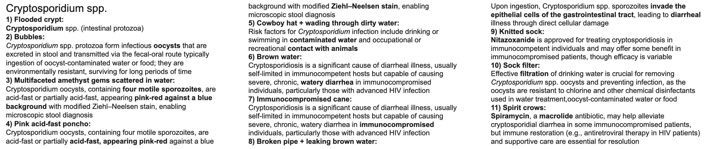
7. Cestodes
- 1Tents: Taenia spp. are cestode (tapeworm) parasites that infect humans
- 2Sagging tent: Taenia saginata (aka beef tapeworm)
- 3Cow: Cattle are the intermediate hosts for Taenia saginata, harboring the larval stage of the parasite
- 4Sun + "SOLD": Taenia solium (aka pork tapeworm)
- 5Pig: Pigs are the intermediate hosts for Taenia solium, harboring the larval stage of the parasite
- 6Meat hooks: The scolex (head) of Taenia solium has two rows of large and small hooks
- 7Pigs on carousel: Ingestion of Taenia solium eggs can lead to neurocysticercosis, an infection of the central nervous system (CNS)
- 8Poop water: Humans become infected with Taenia solium eggs when feces from a person harboring an adult tapeworm contaminate food or water; ingestion of these eggs leads to cysticercosis, including neurocysticercosis, whereas eating undercooked pork containing larval cysts (cysticerci) results in intestinal taeniasis
- 9Motion lines: Neurocysticercosis can present with seizures due to the involvement of the CNS
- 10Swiss cheese: On CT scans, neurocysticercosis typically appears as multiple cystic lesions in the brain, often described as "Swiss cheese-like," with well-defined, round, hypodense cysts; some may contain a hyperdense nodule representing the scolex, and there may be surrounding edema, esp. in the degenerating stage
- 11Egg-shaped cheese in poop water: Neurocysticercosis results when eggs of Taenia solium hatch in the intestine, releasing larvae that can penetrate the intestinal wall, then enter the bloodstream and disseminate to the CNS
- 12Pretzel tent: Praziquantel is an effective anthelmintic for treating taeniasis, including Taenia saginata and Taenia solium intestinal infections, by increasing parasite membrane permeability to calcium, leading to paralysis and death of the adult worm
- 13Strong man named ‘Al' + bendy metal bar: Treatment of neurocysticercosis typically involves antiparasitic therapy with albendazole, often combined with corticosteroids to reduce inflammation from dying cysts, along with antiepileptic drugs to control seizures
- 14Bathroom: Diphyllobothrium latum (aka fish tapeworm)
- 15Fish: Diphyllobothrium latum is transmitted to humans through the ingestion of undercooked or raw fish
- 16"Must B12 to buy fireworks": Diphyllobothrium latum infection can lead to vitamin B12 deficiency and subsequent megaloblastic anemia
- 17Cobalt blue firework: Diphyllobothrium latum infection can lead to vitamin B12 (cobalamin) deficiency and subsequent megaloblastic anemia
- 18Red firework blasts: Diphyllobothrium latum infection can lead to vitamin B12 deficiency and subsequent megaloblastic anemia
- 19Long toilet paper trail: Diphyllobothrium latum is the largest/longest human parasite, reaching lengths up to 10 meters
- 20Toilet paper segments in mud: Proglottid segments of Diphyllobothrium latum can be seen on stool exam, aiding in diagnosis
- 21Pretzel + toilet paper trail: Praziquantel and niclosamide are used most often to treat Diphyllobothrium latum infections and work by eliminating the adult tapeworm from the intestine
- 22Nickel coin slot: Praziquantel and niclosamide are used most often to treat Diphyllobothrium latum infections and work by eliminating the adult tapeworm from the intestine
- 23Cocker Spaniel: Echinococcus granulosus (aka dog tapeworm)
- 24Cocker Spaniel — 1st place: Dogs are the definitive hosts for Echinococcus granulosus, harboring adult tapeworms
- 25Sheepdog — 2nd place: Sheep are the intermediate hosts for Echinococcus granulosus, harboring the larval forms of the parasite
- 26Dog poop: Echinococcus granulosus infection typically occurs through contact with dog feces containing infectious eggs
- 27Egg: On abdominal CT scans, echinococcal liver cysts may show "eggshell" calcifications, meaning a thin, well-defined rim of calcified tissue surrounding the cyst, which helps distinguish them from other types of hepatic cysts
- 28Ribbon on liver spot: Echinococcus granulosus infections can lead to the formation of hydatid cysts in the liver, among other organs
- 29Crumbling ribbon + red and puffy face: Rupture of hydatid (echinococcal) cysts can release parasitic fluid containing highly antigenic material, which may trigger a severe systemic hypersensitivity reaction, including anaphylaxis
- 30Slingshot kid + pink granules + orange-pink outfit: Eosinophilia may be present in Echinococcus granulosus infection, particularly during cyst rupture or larval migration, but may be mild or absent in patients with intact hydatid cysts; peripheral blood eosinophils are the typical bilobed, red-orange/pink granule-containing leukocytes
Show the original legend picture
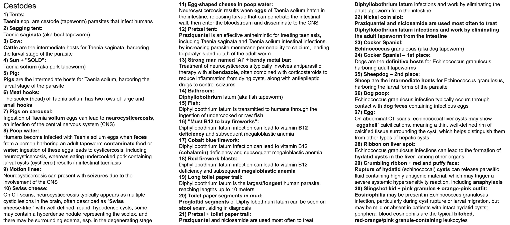
8. Trematodes
- 1San Franschisto Aquatic Park: Schistosoma species are freshwater trematode parasites ("blood flukes") whose snail-released cercariae penetrate human skin during water exposure, causing schistosomiasis with intestinal, hepatic, or urinary manifestations depending on the species.
- 2Swimmer: Free-living Schistosoma spp. cercariae are found in aquatic environments, putting swimmers at risk of infection if the water is contaminated
- 3Snails by fish: Snails are the intermediate hosts for Schistosoma spp., harboring infectious cercariae (the free-swimming larval stage)
- 4Liver-shaped coral: Schistosoma spp. larvae mature in the liver
- 5Blue fish swimming towards liver-shaped coral: Normal portal venous flow moves blood from the gastrointestinal organs through the portal veins toward the liver
- 6Swimming opposite direction: Schistosoma spp. trematodes migrate against the normal direction of portal blood flow
- 7Merman statue: Schistosoma mansoni
- 8Lateral fin + merman statue: The eggs of Schistosoma mansoni have a lateral spine
- 9Japanese tourist: Schistosoma japonicum
- 10Round fish + japanese tourist: The eggs of Schistosoma japonicum have a small spine, making them appear round
- 11Aquarium swimmer: Swimmer's itch is a transient allergic skin reaction that is primarily caused by the cercariae of schistosomes that infect birds
- 12Porthole crack/degraded liver coral: Schistosomiasis can progress to cirrhosis and periportal fibrosis, potentially causing portal hypertension due to liver damage
- 13Yellow coat: Hepatitis secondary to schistosomiasis can cause jaundice because egg-induced periportal inflammation and fibrosis obstruct bile flow, resulting in cholestasis and bilirubin buildup
- 14Swordfish with terminal bill: Schistosoma haematobium
- 15Terminal bill: The eggs of Schistosoma haematobium have a large terminal spine
- 16Bleeding jellyfish: Schistosoma haematobium infection can lead to urinary schistosomiasis, often presenting with hematuria
- 17Crab + swordfish: Chronic infection with Schistosoma haematobium sometimes leads to squamous Cell carcinoma of the bladder
- 18Pretzel + fish: Praziquantel is the treatment of choice for Schistosoma spp. infections
- 19Orca: Clonorchis sinensis (aka liver fluke)
- 20Snails + orca: Snails are the intermediate hosts of Clonorchis sinensis, harboring the larval form of the parasite
- 21Seagull: Clonorchis sinensis resides in the bile ducts, where their eggs trigger chronic inflammation, ductal dilatation, mechanical obstruction, and progressive thickening of the biliary walls
- 22Sclerosed rope: Clonorchis sinensis infection can lead to sclerosing cholangitis, characterized by inflammation and destruction of the bile ducts
- 23Crab + orca: Clonorchis sinensis is a known risk factor for cholangiocarcinoma, a malignancy of the biliary epithelium
- 24Black rocks + seagulls: Clonorchis sinensis infection may result in the formation of pigmented gallstones
- 25"Capped" seagull eggs: The eggs of Clonorchis sinensis are operculated, giving them a "capped" appearance
- 26Pretzel + orca: Praziquantel or albendazole are the treatments of choice for Clonorchis sinensis infection
- 27Penguins: Paragonimus westermani (aka Japanese lung fluke)
- 28Red speckled lung spots: Paragonimus westermani trematodes infect the lungs, causing respiratory symptoms including chronic cough and hemoptysis
- 29Snails + penguins: Snails are intermediate hosts of Paragonimus westermani, harboring the larval stage of the parasite
- 30Crab legs: Transmission of Paragonimus westermani occurs through the consumption of raw or undercooked seafood
- 31"Capped" penguin eggs: The eggs of Paragonimus westermani are operculated, giving them a "capped" appearance
- 32Pretzel + penguins: Praziquantel is the drug of choice for Paragonimus westermani infection
Show the original legend picture
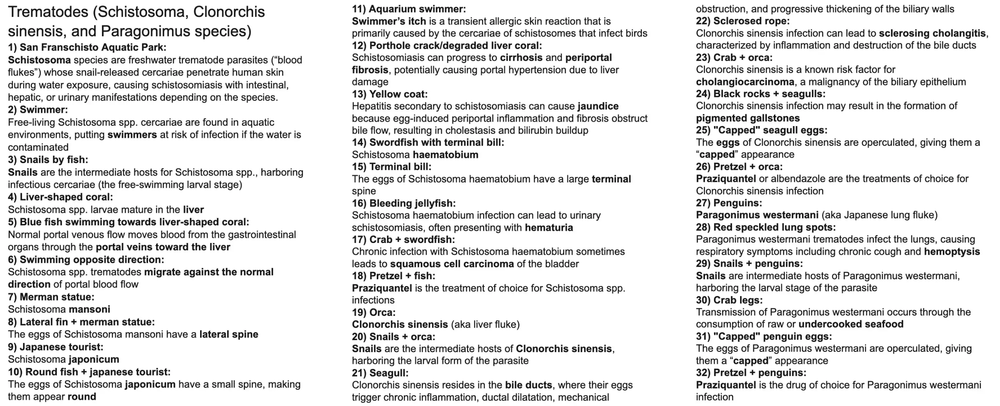
9. Intestinal Nematodes Enterobius, Ancylostoma, Necator, Ascaris, Strongyloides, and Trichinella
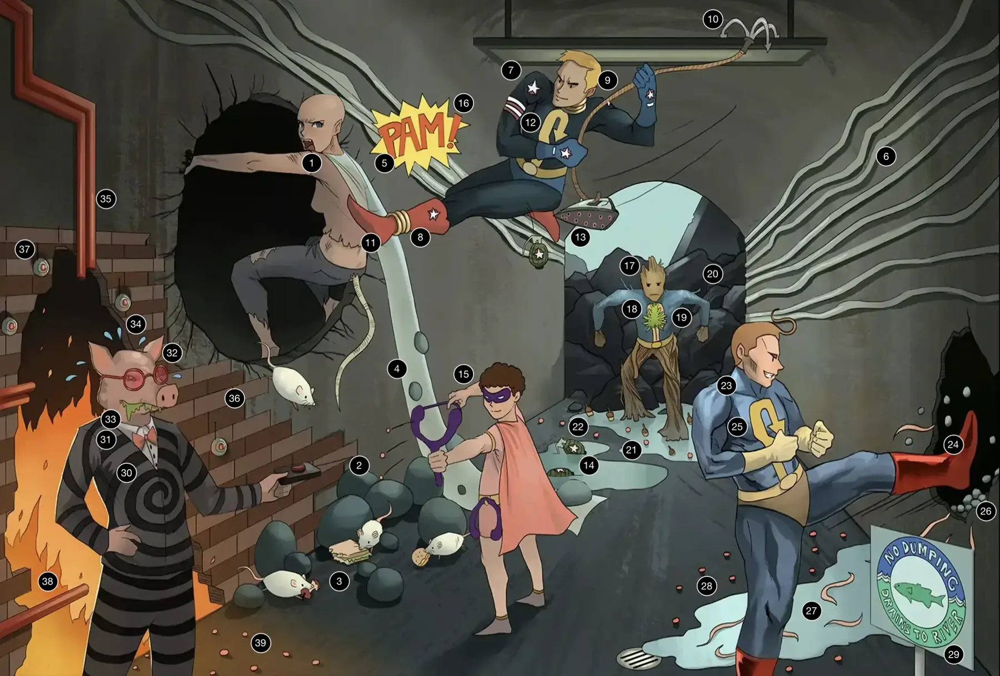
- 1Vermin lady entering wall: Enterobius vermicularis (aka pinworm, an intestinal nematode)
- 2Rocks outside hole: Female Enterobius vermicularis nematodes lay their eggs in the perianal region, causing pruritus
- 3Rats eating by egg rocks: Enterobius vermicularis transmission occurs via the fecal-oral route, often through the ingestion of infective eggs that are on contaminated objects and surfaces
- 4Scotch tape cape: The Scotch tape test involves pressing clear adhesive tape to the perianal skin to collect Enterobius vermicularis eggs, which will be visible when examined microscopically if the person is infected
- 5"PAM!" + vermin lady: Pyrantel pamoate is an effective treatment for Enterobius vermicularis infection
- 6Bendy metal bars: Albendazole is a broad-spectrum anthelmintic effective against multiple nematodes, including Enterobius vermicularis, Ancylostoma duodenale, Necator americanus, Ascaris lumbricoides, Strongyloides stercoralis, and Trichinella spiralis; it works by binding B-tubulin to inhibit microtubule formation; it is contraindicated in the first trimester of pregnancy
- 7America dude: Ancylostoma duodenale and Necator americanus (aka hookworms)
- 8Rings around ankle: Ancylostoma duodenale (an intestinal nematode)
- 9Rings around neck: Necator americanus (an intestinal nematode)
- 10Hook: Ancylostoma duodenale and Necator americanus are hookworms, roundworms that have a hook-like head that can attach to the walls of the intestines
- 11Red boots on America dude: Ancylostoma duodenale and Necator americanus larvae enter the body by penetrating exposed skin, predominantly on the feet
- 12Arrow symbol on America dude: After penetrating the skin, Ancylostoma duodenale and Necator americanus travel from the bloodstream — lungs/trachea — pharynx (where the worms are swallowed) — GI tract (where they mature in the small intestine, attach, suck blood, and release eggs in the stool to continue the cycle)
- 13Iron + small pale steam holes: Hookworm infections can cause iron deficiency anemia due to chronic intestinal blood loss
- 14Grenades in water: The diagnosis of hookworm infection is confirmed by identifying eggs in stool samples
- 15Bilobed slingshot kid + pink granules: Eosinophilia is a common hematological finding in hookworm infections; characterized by bilobed eosinophils with bright red-orange/pink granules, particularly during larval migration through tissues
- 16"PAM!" + America dude: Pyrantel pamoate is an effective treatment for hookworm infections
- 17Lumbering tree man: Ascaris lumbricoides (aka human roundworm, an intestinal nematode); infection occurs when embryonated eggs are ingested from soil-contaminated hands, vegetables, or water
- 18Arrow symbol on lumbering tree man: After ingestion of eggs, Ascaris lumbricoides travels from the small intestine — bloodstream — lungs/trachea — pharynx (where the worms are swallowed) — GI tract (where the adult worms mature in the small intestine and their eggs are passed in the feces to continue the cycle)
- 19Respiratory leaf: Respiratory symptoms, including cough and wheezing, can occur during the pulmonary migration phase of Ascaris lumbricoides
- 20Obstructing rubble: Heavy Ascaris lumbricoides infestation can lead to intestinal obstruction, especially at the ileocecal valve
- 21Acorns in water: Ascaris lumbricoides infection is diagnosed by identifying characteristic eggs in stool specimens
- 22Pink granules by lumbering tree man: Eosinophilia is a common hematologic finding in Ascaris lumbricoides infection
- 23Strong guy: Strongyloides stercoralis (aka threadworm, an intestinal nematode)
- 24Red boots on strong guy: Strongyloides stercoralis larvae enter the body by penetrating exposed skin, predominantly on the feet
- 25Arrow symbol on strong guy: After penetrating the skin, Strongyloides stercoralis travels from the bloodstream — lungs/trachea — pharynx (where the worms are swallowed) — GI tract (where the adult females embed in the small intestine and produce rhabditiform larvae that are passed in the stool or can become filariform larvae and cause autoinfection)
- 26Rocks inside hole: Some Strongyloides stercoralis larvae mature and immediately reinfect the host by burrowing into the intestinal wall or penetrating the skin around the anus, causing autoinfection
- 27Larval worms in water: Strongyloides stercoralis infection is diagnosed by identifying the larvae in stool specimens
- 28Pink granules by strong guy: Eosinophilia is a common hematologic finding in Strongyloides stercoralis infection
- 29"No dumping, drains to river": Ivermectin is the treatment of choice for Strongyloides stercoralis infection
- 30Porky trickster + spiral suit: Trichinella spiralis (aka pork worm, an intestinal nematode)
- 31Pig: Trichinella spiralis is transmitted through the ingestion of larvae in undercooked or raw meat (such as pork or bear)
- 32Glasses: Trichinella spiralis infection can lead to periorbital edema as part of a systemic hypersensitivity reaction
- 33Green drool: Initial symptoms of Trichinella spiralis infection can include gastrointestinal distress, often presenting with nausea, diarrhea, vomiting, and abdominal discomfort
- 34Sweat drops: Trichinella spiralis infection can cause systemic symptoms including fever
- 35Red pipes: After being ingested, Trichinella spiralis larvae penetrate the intestinal wall, enter the bloodstream, and are subsequently transported to striated muscles, where they encyst and cause symptoms
- 36Striated brick: After being ingested, Trichinella spiralis larvae penetrate the intestinal wall, enter the bloodstream, and are subsequently transported to striated muscles, where they encyst and cause symptoms
- 37Explosives in brick: After being ingested, Trichinella spiralis larvae penetrate the intestinal wall, enter the bloodstream, and are subsequently transported to striated muscles, where they encyst and cause symptoms
- 38Inflammatory fire: Trichinella spiralis infection is associated with myalgia (muscle pain) and inflammation due to larval encystment in muscles
- 39Pink granules by pig: Eosinophilia is a common hematologic finding in Trichinella spiralis infection
Show the original legend picture
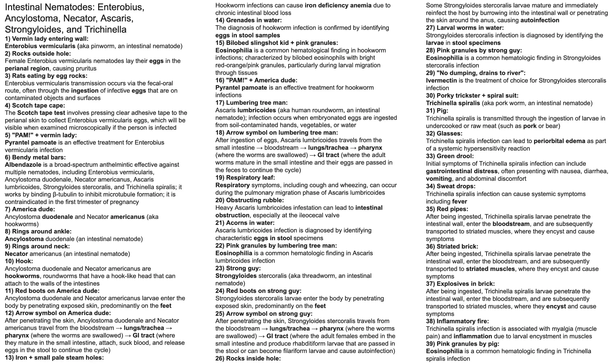
10. Hepatitis A Virus (Picornaviridae)
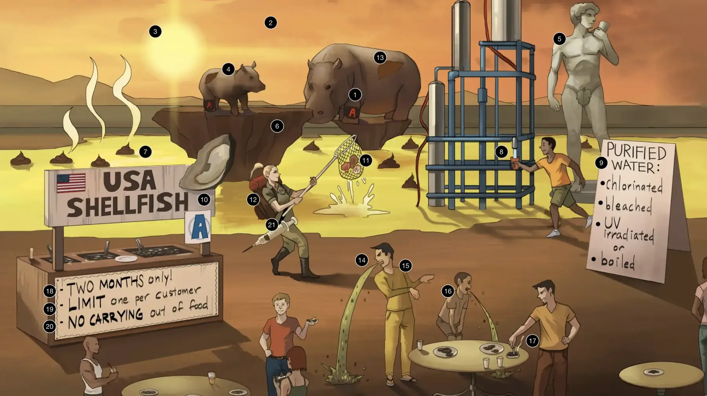
- 1"A"-tagged hippos: Hepatitis A virus (a positive-sense RNA virus in the Picornaviridae family)
- 2Warm colors: Hepatitis A virus is a positive-sense RNA virus
- 3Positive sun: Hepatitis A virus is a positive-sense RNA virus
- 4Baby hippo: Hepatitis A virus is a part of the Picornaviridae family
- 5Statue of David: Hepatitis A virus lacks an envelope, classifying it as a naked virus
- 6Hippos protected from acid: Hepatitis A virus is acid-stable, allowing it to survive in the gastric environment and facilitating fecal-oral transmission
- 7Poop: Hepatitis A virus is primarily transmitted via the fecal-oral route, through contaminated food or water, or by contact with an infected person or contaminated object
- 8Water cup: In resource-limited settings, hepatitis A virus infections are often caused by consuming contaminated water due to poor sanitation and limited access to clean drinking water
- 9Water purification methods: Water purification methods such as chlorination, UV irradiation, boiling, and bleach (sodium hypochlorite) effectively inactivate hepatitis A virus in contaminated water sources
- 10USA shellfish stand: In the US, a common source of hepatitis A virus is contaminated shellfish harvested from sewage-contaminated or enclosed waters, with less frequent cases from private wells contaminated by sewage or close contact with infected individuals
- 11Pulling shellfish from poop water: In the US, a common source of hepatitis A virus is contaminated shellfish harvested from sewage-contaminated or enclosed waters, with less frequent cases from private wells contaminated by sewage or close contact with infected individuals
- 12Traveler's backpack: Individuals traveling to areas with high prevalence of hepatitis A (e.g., parts of Asia, Africa, Mexico, Central and South America, and the Caribbean islands) are at increased risk
- 13Enlarged liver spot: Hepatitis A virus infection often goes unnoticed but can present as acute viral hepatitis, causing liver inflammation (hepatitis) with moderate enlargement of the liver (hepatomegaly) and, less frequently, an enlargement of the spleen (splenomegaly)
- 14Vomiting: Hepatitis A virus infection symptoms include fatigue, anorexia, nausea, vomiting, and diarrhea
- 15Adult in yellow: Most adults with hepatitis A present with jaundice (yellowing of skin and eyes) due to elevated bilirubin from liver inflammation, which impairs the liver's ability to process and excrete bilirubin
- 16Child in tan: Hepatitis A virus infection in infants and young children often presents as anicteric hepatitis, meaning there is liver inflammation without jaundice, other symptoms may be mild
- 17Putting out cigarette: A distaste for cigarettes is an early prodromal sign of hepatitis A virus infection, particularly in adult smokers, reflecting hepatic inflammation and nausea before overt jaundice develops
- 18"ONE MONTH only": Hepatitis A virus infection is self-limiting, with an incubation period of 2-6 weeks (average ~1 month), followed by a 1-2 week prodrome (fatigue, nausea, anorexia) a jaundice phase lasting 1-2 weeks, and resolution of symptoms typically within ~2 months
- 19"LIMIT one per customer": Hepatitis A virus infection is self-limiting, with an incubation period of 2-6 weeks (average ~1 month), followed by a 1-2 week prodrome (fatigue, nausea, anorexia) a jaundice phase lasting 1-2 weeks, and resolution of symptoms typically within ~2 months
- 20"NO CARRYING out of food": Hepatitis A virus infection does not lead to a carrier state or progress to chronic liver disease
- 21Syringe tranquilizer gun: Hepatitis A virus can be prevented with an inactivated vaccine, which elicits a lasting immune response; it is recommended for high-risk individuals, including those in endemic areas, people with chronic liver disease, men who have sex with men, people experiencing homelessness, and injection drug users
Show the original legend picture
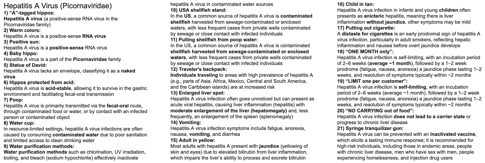
11. Hepatitis B Viral Basics & Infectious Diseases (Hepadnaviridae)
- 1Hippies in blue: Hepatitis B virus (HBV, a DNA virus in the Hepadnaviridae family)
- 2Hippo van: HBV is a cause of viral hepatitis
- 3"Hippie pad": HBV is a member of the Hepadnaviridae family
- 4Cool colors: HBV is a DNA virus
- 5Hippie clothing: HBV is an enveloped virus
- 6Hippies inside dome: HBV has a unique replication process that involves both the nucleus and the cytoplasm of the host cell
- 7Hippies outside of dome: HBV has a unique replication process that involves both the nucleus and the cytoplasm of the host cell
- 8Kumbaya circle + half circle: The genome of HBV is partially double-stranded circular DNA
- 9"Reverso Transcriptum" spellbook: HBV produces reverse transcriptase, an RNA-dependent DNA polymerase that converts RNA to DNA
- 10"Sex, drugs, rock & roll": HBV transmission routes include sexual contact, blood exposure (such as IV drug use and needlestick injuries), and blood transfusions
- 11Red tie-dye outfits of mother and baby: Vertical transmission of HBV can occur during childbirth, particularly when there is mixing of maternal and fetal blood
- 12Tiki torch: HBV is a part of the TORCHeS group of infections—T: Toxoplasma; O: Other (varicella-zoster virus, parvovirus B19, Zika virus, HIV, HBV); R: Rubella; C: Cytomegalovirus (CMV); He: Herpes simplex virus (HSV); S: Syphilis—a group of infections that are transmitted vertically through the placenta
- 13Baby + 90% of liver cookie: Neonatal HBV infections have a high risk (~90%) of progressing to chronic infection due to the immaturity of the neonatal immune system
- 14Adult + 10% of liver cookie: <10% of adults who are infected with HBV will develop chronic infection, as most adults mount an effective immune response that clears the virus
- 15Knee pain lines: Acute HBV infection is associated with polyarthralgia and polyarthritis, typically presenting as symmetrical pain and swelling of the small joints of the hands, wrists, and knees in a rheumatoid arthritis—like pattern that usually resolves with the onset of jaundice
- 16Body henna: HBV infection can present with a maculopapular or urticarial rash, often accompanied by other systemic symptoms (e.g, fever, malaise); the rash may become purpuric and non-blanching due to immune-complex—mediated small-vessel vasculitis
- 17Red beads: HBV infection can lead to polyarteritis nodosa (PAN), a condition characterized by necrotizing inflammation of medium-sized arteries, which can result in aneurysms that appear as a "beads on a string' pattern on angiography
- 18Kidney box: HBV-associated polyarteritis nodosa can involve the kidneys, typically manifesting as reduced glomerular filtration rate (GFR), hypertension, microscopic hematuria, and proteinuria
- 19Thinner glomerular knot: Chronic HBV infection can cause kidney disease, including membranous glomerulopathy, which shows subtle thickening of the glomerular basement membrane due to subepithelial immune complex deposits, and membranoproliferative glomerulonephritis, which is marked by mesangial proliferation, expansion into the glomerular capillary walls, and the classic "tram-track" appearance from immune complex deposition
- 20Thicker glomerular knot: Chronic HBV infection can cause kidney disease, including membranous glomerulopathy, which shows subtle thickening of the glomerular basement membrane due to subepithelial immune complex deposits, and membranoproliferative glomerulonephritis, which is marked by mesangial proliferation, expansion into the glomerular capillary walls, and the classic "tram-track" appearance from immune complex deposition
- 21Rising ALT volleyball: Alanine aminotransferase (ALT) levels rise during acute HBV infection and typically fall when the symptomatic phase is over; in viral hepatitis, ALT>AST; histology during the acute phase may show Councilman bodies, which are eosinophilic apoptotic hepatocytes in the liver lobules
- 22Baby + deflated ALT volleyball: Acute neonatal HBV infection may not present with elevated ALT levels, or the elevations might be less pronounced compared to adults with acute infections, due to the immature neonatal immune response
- 23Antigen stickers on front of hippo van around ‘S' & ‘E': The key hepatitis B antigens to know are HBsAg, the first marker of active infection; HBcAg, found in hepatocytes and targeted by anti-HBc antibodies; and HBeAg, which indicates active viral replication and high infectivity
- 24Spiky "S": HBsAg (hepatitis B surface antigen) is the first serological marker to appear in an active HBV infection, indicating current infection (acute or chronic) and appearing 1-10 weeks after exposure
- 25Spiky "E": HBeAg (hepatitis B envelope antigen) is a secreted protein derived from the precore region of the HBV core gene and serves as a marker of active viral replication, indicating high infectivity
- 26Flat tire under "S" and "E": During the symptomatic (acute) phase of hepatitis B infection, patients are positive for HBsAg and HBeAg, indicating active viral replication and high infectivity
- 27"C" on window: Anti-HBc IgM (hepatitis B core antibodies) is the first detectable antibody, which may be the only detectable serologic marker during the window period, when viral antigens (HBsAg and HBeAg) have disappeared and anti-HBs has not yet appeared
- 28Smooth "E": The presence of anti-HBe (hepatitis B envelope antibody) indicates resolution of acute infection and low viral replication
- 29Smooth "S": Anti-HBs (hepatitis B surface antibodies) positivity typically indicates recovery from HBV infection or successful vaccination
- 30"S" line around syringe: Patients who have received the hepatitis B vaccine will test positive for anti-HBs and negative for anti-HBc and anti-HBe, reflecting immunity due to vaccination without prior infection
- 31Serologic rainbow decal lines: The typical HBV serologic timeline shows antigen lines peaking early and antibody lines rising later, with HBsAg appearing first and peaking early, followed by HBeAg; anti-HBc IgM rises during the acute phase and is the only marker during the window period, while anti-HBc IgG appears later and persists indefinitely, indicating past or chronic infection; anti-HBe gradually increases as HBeAg falls, and anti-HBs (IgG) appears last, rising slowly to indicate recovery or immunity
- 32Liver stone: Chronic HBV infection can lead to cirrhosis; histology in chronic infection may show ground-glass hepatocytes, which are hepatocytes with a finely granular, eosinophilic cytoplasm due to cytoplasmic accumulation of HBsAg
- 33Crab tarot card: HBV is a significant risk factor for the development of hepatocellular carcinoma
- 34Kid hippies in orange: Hepatitis D virus (HDV, a negative-sense RNA virus in the Deltaviridae family)
- 35Orange hippie clothing: HDV is an enveloped virus with circular, single-stranded, negative-sense RNA
- 36Circular headbands: HDV is an enveloped virus with circular, single-stranded, negative-sense RNA
- 37Negative moons: HDV is an enveloped virus with circular, single-stranded, negative-sense RNA
- 38Mom attaching buttons: HDV requires the presence of HBsAg (hepatitis B surface antigen) for its replication and assembly, and can only infect individuals who are concurrently infected with or carriers of HBV
- 39Co-operative hand holding: Co-infection with HBV and HDV occurs when both viruses are transmitted simultaneously, leading to acute hepatitis with a course similar to HBV infection but with a higher risk of severe disease; it is usually self-limited and rarely becomes chronic
- 40Kid on shoulders: Superinfection occurs when HDV infects an individual with preexisting chronic HBV infection, resulting in more severe disease, a higher risk of fulminant hepatitis, and a greater likelihood of progressing to chronic infection
- 41Grimacing father: Superinfection occurs when HDV infects an individual with preexisting chronic HBV infection, resulting in more severe disease, a higher risk of fulminant hepatitis, and a greater likelihood of progressing to chronic infection
- 42Lamb: Lamivudine (Epivir) is an antiviral medication that inhibits HBV replication and reduces viral load
- 43She-elf + Nucleotide mace + chain: Nucleoside reverse transcriptase inhibitors (NRTIs, e.g., lamivudine) inhibit HBV replication
- 44Alpha antenna: Interferon-a (IFN-a) therapy can help reduce HBV replication and improve liver function in some patients
- 45Baby + antibody keys: At-risk infants should receive hepatitis B immune globulin (HBIG) and the hepatitis B vaccine for both passive and active immunization
Show the original legend picture
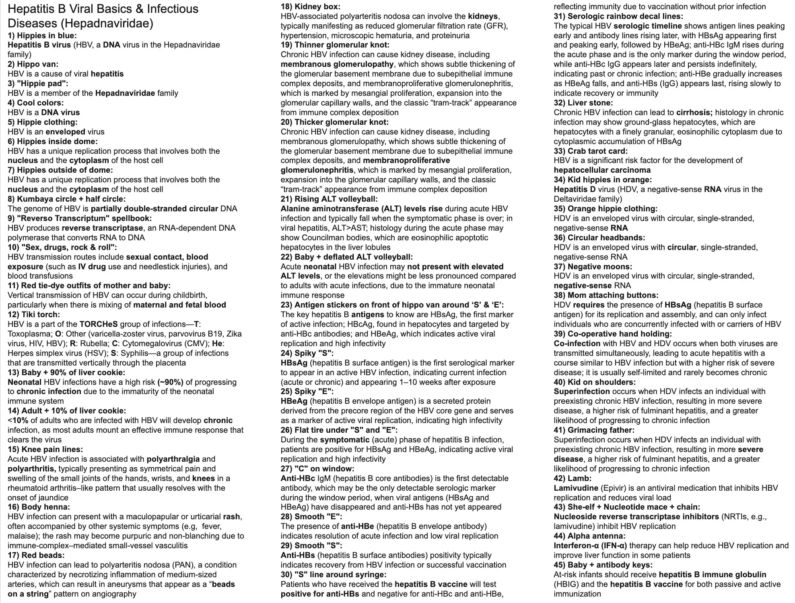
12. Hepatitis B Viral Life Cycle (Hepadnaviridae)
- 1Sticky entrance: Hepatitis B virus (HBV) initiates its life cycle by attaches to hepatocytes using proteoglycans on the cell surface
- 2Magically repairing hula hoop: Upon entry, the virus's partially double-stranded DNA is converted into a crucial form known as covalently closed circular DNA (cccDNA) through a process termed genome repair
- 3Orange silly string: The host cell's machinery, specifically RNA polymerase, then transcribes this cccDNA into four RNA intermediates
- 4Photo booth + photo strip: Two subsets of these, the subgenomic RNA (sgRNA) and pregenomic RNA (pgRNA), are crucial for producing core protein, viral polymerase, and surface antigens (HBsAg); subgenomic RNA is translated to core protein and viral polymerase
- 5Bee antenna: Hepatitis B surface antigen (HBsAg) is translated from subgenomic RNA and processed in the ER and Golgi; HBsAg can be secreted alone as non-infectious subviral particles
- 6Chain bib: Hepatitis B core antigen (HBcAg) is translated from subgenomic RNA
- 7Reverso Transcriptum: Reverse transcriptase (viral polymerase) is translated from subgenomic RNA
- 8Chain link playpen + baby hippo bee: Within the hepatocyte, the pregenomic RNA and viral polymerase are encapsidated by core protein into an immature viral core
- 9Reverso transcriptum + broken blue ring: Within the immature viral core, pregenomic RNA is transformed into viral DNA genome via encapsidated reverse transcriptase
- 10Blue ring thrown on stage: This immature core is transported to the nucleus, where the viral DNA undergoes processes similar to cccDNA formation and transcription
- 11Hooded hippo bee: Following these nuclear activities, the viral core acquires an envelope from the host cell organelles, maturing into an infectious viral particle
- 12Delta satellites hijacking party: Notably, the hepatitis delta virus (HDV) hijacks the HBV surface antigens to facilitate its own entry, assembly, and exit from hepatocytes
Show the original legend picture
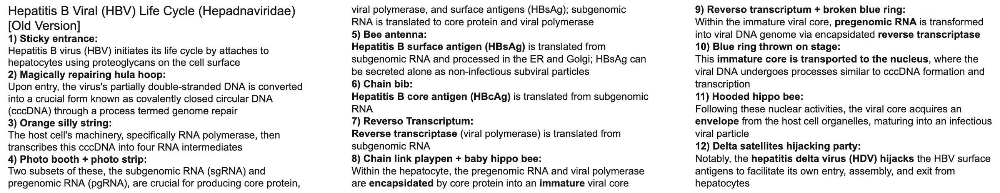
13. Hepatitis C Virus (Flaviviridae)
- 1Hippo + C earring: Hepatitis C virus (HCV, a positive-sense RNA virus in the Flaviviridae family)
- 2Five Flavors Forest Cafe: Hepatitis C virus belongs to the Flaviviridae family
- 3Warm colors: HCV is a positive-sense, single-stranded, non-segmented RNA virus
- 4Positive sun: HCV is a positive-sense, single-stranded, non-segmented RNA virus
- 5Robe: HCV is an enveloped virus
- 6"No swamung from 3-5": The RNA-dependent RNA polymerase of HCV lacks proofreading exonuclease activity in the 3'-5' direction, causing frequent mutations and antigenic variation that help the virus evade the immune system and make vaccine development difficult
- 7Rainbow robe: The RNA-dependent RNA polymerase of HCV lacks proofreading exonuclease activity in the 3'-5' direction, causing frequent mutations and antigenic variation that help the virus evade the immune system and make vaccine development difficult
- 8Needle pen: HCV is primarily bloodborne and transmitted through parenteral exposure, such as sharing needles, syringes, or other drug-injection equipment, needlestick or sharps injuries in healthcare settings, and, less commonly, blood transfusions, organ transplants, or mother-to-child transmission during childbirth
- 9Red ink: HCV is primarily bloodborne and transmitted through parenteral exposure, such as sharing needles, syringes, or other drug-injection equipment, needlestick or sharps injuries in healthcare settings, and, less commonly, blood transfusions, organ transplants, or mother-to-child transmission during childbirth
- 10Young hippo + fluctuating ALT buoy: In acute HCV infection (the first 6 months), alanine aminotransferase (ALT) levels fluctuate due to cycles of viral replication and immune-mediated liver injury, and patients may experience general symptoms such as fatigue, nausea, fever, abdominal discomfort, and jaundice
- 11Older hippo: Chronic hepatitis C virus (HCV) infection is often asymptomatic early but can cause progressive liver damage, presenting with fatigue, jaundice, and abdominal discomfort, and in advanced stages may lead to cirrhosis—manifested by easy bruising, spider angiomas, and ascites—and in some patients, hepatocellular carcinoma
- 12Liver rock + crabs: Chronic hepatitis C virus (HCV) infection is often asymptomatic early but can cause progressive liver damage, presenting with fatigue, jaundice, and abdominal discomfort, and in advanced stages may lead to cirrhosis—manifested by easy bruising, spider angiomas, and ascites—and in some patients, hepatocellular carcinoma
- 13Antibody tree: Screening for hepatitis C virus (HCV) should include an HCV antibody test (anti-HCV) to determine if a person has ever been exposed and an HCV RNA test (PCR) to confirm whether there is an active, ongoing infection
- 14Strandy orange seaweed: Screening for hepatitis C virus (HCV) should include an HCV antibody test (anti-HCV) to determine if a person has ever been exposed and an HCV RNA test (PCR) to confirm whether there is an active, ongoing infection
- 15Hippo playing in orange seaweed: A positive HCV RNA test indicates active infection because it directly detects the virus's genetic material in the blood, showing that the virus is currently replicating rather than just a past exposure
- 16Hippo hiding in orange seaweed: A negative hepatitis C virus (HCV) antibody test with a positive HCV RNA test suggests an occult HCV infection, which can occur during the early window period before antibodies develop or in immunocompromised patients who may not produce a detectable antibody response
- 17"Director": HCV infection can be effectively treated with direct-acting antivirals (DAAs), which target specific steps in the viral life cycle to achieve high cure rates
- 18Camera A + Camera B + syringe bases: When treating patients for HCV, make sure they're vaccinated for Hepatitis A and B (unless already immune)
- 19"Animal Filming Permit": For patients with chronic HCV, routinely monitor for hepatocellular carcinoma (HCC) with serum alpha-fetoprotein (AFP) levels and liver ultrasounds
- 20Megaphone: For patients with chronic HCV, routinely monitor for hepatocellular carcinoma (HCC) with serum alpha-fetoprotein (AFP) levels and liver ultrasounds
Show the original legend picture
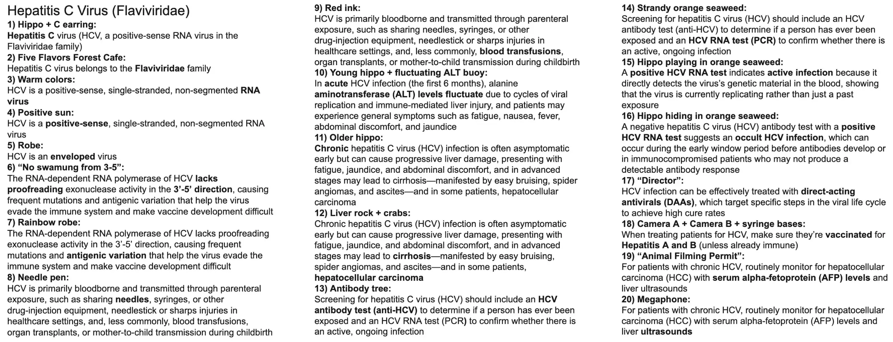
14. Flaviviridae/Yellow Fever
- 1Warm colors: Flaviviridae are RNA viruses
- 2Positive sun: Flaviviridae are positive-sense RNA viruses
- 3"5 Flavors!": The Flaviviridae family includes viruses in the genera Flavivirus and Hepacivirus, (five clinically relevant members such as dengue virus, yellow fever virus, Zika virus, West Nile virus, and hepatitis C virus), many flaviviruses are arboviruses (ARthropod BOrne viruses) transmitted to humans by insect vectors (e.g., mosquitoes (Aedes or Culex species); in contrast, hepatitis C virus is primarily bloodborne and not vector-transmitted
- 4Single straw: Flaviviridae possess a non-segmented, single-stranded RNA genome
- 5Hep C Hippo: The hepatitis C virus is a member of Flaviviridae (i.e., Hepacivirus genus)
- 6Robe: Flaviviridae are enveloped viruses
- 7Dinghy with a donkey: Dengue virus (Flavivirus genus) is transmitted by the Aedes aegypti mosquito is the cause of dengue fever (‘breakbone fever') characterized by high fever, severe myalgias/arthralgias, headache, and rash
- 8Eighties clothes on donkey: Dengue virus (Flavivirus genus) is transmitted by the Aedes aegypti mosquito is the cause of dengue fever (‘breakbone fever') characterized by high fever, severe myalgias/arthralgias, headache, and macular rash; treatment is mainly supportive
- 9Broken plates: Dengue virus causes bone marrow suppression and immune-mediated platelet destruction, leading to thrombocytopenia and increased risk of hemorrhage
- 10Spilled strawberry milkshake: Dengue becomes dengue hemorrhagic fever when thrombocytopenia, plasma leakage, and hemorrhagic manifestations are present, often during secondary infection
- 11Deflated kidney: Severe dengue can lead to acute renal failure and hypovolemic or septic shock due to plasma leakage, dehydration, and multiorgan dysfunction
- 12Syringe-shaped oar: Prevent re-infection through administration of the tetravalent live attenuated vaccine in those with confirmed PRIOR history of dengue virus fever; is only given to individuals with prior dengue infection because in seronegative patients (those who haven't had the disease) it can predispose to antibody-dependent enhancement and severe disease upon natural infection
- 13Yellow water buffalo: Yellow fever virus (a positive-sense RNA virus in the flavivirus family) is transmitted by the Aedes aegypti mosquito causes yellow fever characterized by fever, jaundice, myalgia, and hemorrhagic manifestations; treatment is mainly supportive
- 14Eighties clothes on buffalo: Yellow fever virus (a positive-sense RNA virus in the flavivirus family) is transmitted by the Aedes aegypti mosquito causes yellow fever characterized by fever, jaundice, myalgia, and hemorrhagic manifestations; treatment is mainly supportive
- 15Liver spot + yellow buffalo: Yellow fever virus may damage hepatocytes and Kupffer cells, causing hepatocellular necrosis and inflammation that lead to hepatomegaly and impaired bilirubin metabolism, which manifests clinically as jaundice
- 16Back hump: Yellow fever can cause severe myalgia (muscle pain), especially in the lumbosacral region, due to viral-induced myositis and cytokine-mediated muscle inflammation
- 17Red stool: Yellow fever is a hemorrhagic fever that can cause bleeding diathesis (bloody diarrhea, melena, hematemesis, epistaxis, and petechiae) due to hepatocellular injury (impaired clotting factor synthesis), thrombocytopenia, and endothelial damage, which is reflected in elevated PT, PTT, and low platelet counts
- 18Syringe-shaped horns: A live attenuated vaccine is available to prevent yellow fever and is especially useful to give to those traveling to parts of Africa and South America
- 19Zebra: Zika virus (Flavivirus genus) is transmitted by the Aedes aegypti mosquito, causing mild fever, rash, arthralgia (joint pain), and conjunctivitis (inflammation of the conjunctiva, causing red, irritated eyes); treatment is mainly supportive
- 20Eighties clothes on zebra: Zika virus (Flavivirus genus) is transmitted by the Aedes aegypti mosquito, causing mild fever, rash, arthralgia (joint pain), and conjunctivitis (inflammation of the conjunctiva, causing red, irritated eyes); treatment is mainly supportive
- 21Pregnant zebra: Zika virus is shed in blood, semen, and other body fluids, allowing transmission not only via Aedes mosquitoes but also vertically (from mother to fetus during pregnancy), sexually, and through blood transfusion or organ transplantation
- 22Tiny hat: Congenital Zika syndrome is marked by microcephaly, deficient brain tissue and neurological dysfunction
- 23Guillain the bear: Zika virus infection is associated Guillain-Barré syndrome, presenting as ascending symmetric weakness with areflexia, often 1-2 weeks after acute infection
- 24Nile bird: West Nile virus, transmitted by Culex mosquitoes and maintained in birds as reservoir hosts, is mostly asymptomatic but can cause West Nile fever—characterized by fever, headache, myalgia (muscle pain), and rash—or progress to neuroinvasive disease; treatment is mainly supportive
- 25Cool-X + mosquito: West Nile virus, transmitted by Culex mosquitoes and maintained in birds as reservoir hosts, is mostly asymptomatic but can cause West Nile fever—characterized by fever, headache, myalgia (muscle pain), and rash—or progress to neuroinvasive disease; treatment is mainly supportive
- 26Red feather on head: West Nile virus can cause neuroinvasive disease, such as encephalitis (inflammation of brain parenchyma), presenting with fever, headache, altered mental status, seizures, and focal neurological deficits
- 27Neck brace: West Nile virus can cause neuroinvasive disease, such as meningitis (inflammation of meninges), presenting with fever, headache, neck stiffness, photophobia, and nausea,
- 28Floppy neck: West Nile virus can present with asymmetric acute flaccid paralysis (damage to anterior horn cells, much like poliovirus-induced poliomyelitis)
- 29Flapping wings: West Nile virus can present with signs of neurological dysfunction, such as seizures, altered mental status, focal deficits, Parkinson-like movement disorder, etc.
- 30Comatose bird: West Nile virus can cause serious neuroinvasive disease, which can result in coma
Show the original legend picture
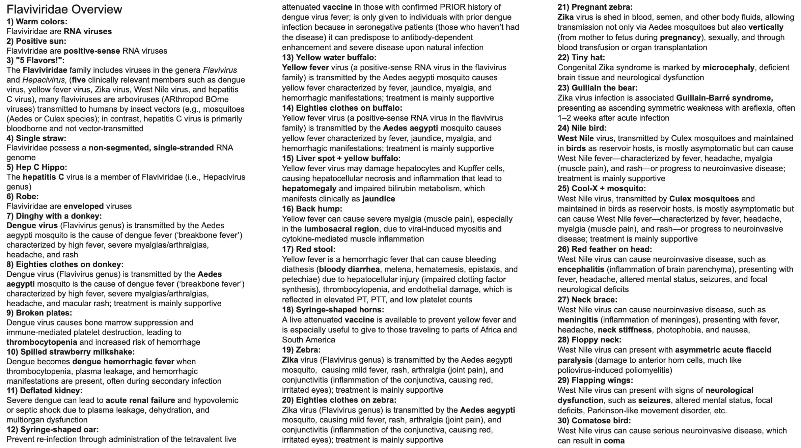
15. Actinomyces israelii
- 1Israeli soldier: Actinomyces israelii (a gram-positive bacillus)
- 2Purple hues: Actinomyces israelii is a gram-positive bacillus
- 3Branching tree: Actinomyces israelii is characterized by its unique filamentous, branching bacilli structure
- 4Anaerobic gasmask: Actinomyces israelii is classified as a facultative anaerobe, though optimal growth is seen under anaerobic conditions
- 5Jaw wrap: Actinomyces israelii is a typically a harmless member of the oral flora, but can lead to cervicofacial actinomycosis in cases where mucosal injury occurs in the oral or jaw areas, notably during dental procedures, has a slow progression, beginning with a non-tender jaw lump and eventually forming an abscess
- 6Storm drain: In cervicofacial actinomycosis, lesions often form sinus tracts extending to the skin, emitting a purulent discharge containing hard, yellowish "sulfur granules"
- 7Yellow rocks: In cervicofacial actinomycosis, lesions often form sinus tracts extending to the skin, emitting a purulent discharge containing hard, yellowish "sulfur granules"
- 8Purple pencil: Penicillin G is the preferred antibiotic for treating Actinomyces israelii infections, often requiring extended treatment duration for complete resolution, in more complicated cases, surgical drainage might be needed
Show the original legend picture
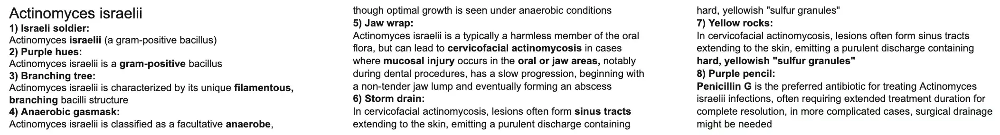
16. Helicobacter pylori
- 1Helicopter: Helicobacter pylori (a gram-negative bacillus)
- 2Red helicopter: Helicobacter pylori is a gram-negative bacillus
- 3Helicopter rotor: Helicobacter pylori is a motile bacterium
- 4Curved mustache: Helicobacter pylori is a curved bacillus; may be described as spiral shaped or "comma-shaped"
- 5Ammonia spray: Helicobacter pylori produces urease (urease positive), an enzyme that converts urea to ammonia and carbon dioxide (H. pylori urea production is basis of the urea breath test — patient ingests radiolabeled urea; H. pylori urease produces labeled CO, detected in exhaled air, another diagnostic option is endoscopic biopsy, with rapid urease testing, histology, or culture providing direct evidence of infection)
- 6Oxidase blue ring: Helicobacter pylori produces oxidase (oxidase positive), an enzyme that plays a vital role in aerobic respiration
- 7Bullet holes: Helicobacter pylori infection is strongly associated with gastric and duodenal ulcers
- 8Cancer crab: Chronic Helicobacter pylori infection significantly elevates the risk of developing gastric adenocarcinoma and mucosa-associated lymphoid tissue (MALT) lymphomas
- 9Mucus-covered tissues: Chronic Helicobacter pylori infection significantly elevates the risk of developing gastric adenocarcinoma and mucosa-associated lymphoid tissue (MALT) lymphomas
- 10Proton bomb blocking gas flow: Treatment of Helicobacter pylori infection often involves triple therapy, comprising a proton pump inhibitor, clarithromycin, and either amoxicillin or metronidazole
- 11Duodenal gas hose: Helicobacter pylori infection is diagnosed in 90%+ of duodenal ulcer cases
- 12Ammo: Treatment of Helicobacter pylori infection often involves triple therapy, comprising a proton pump inhibitor, clarithromycin, and either amoxicillin or metronidazole
- 13"Keep clear" + macrolide crow: Treatment of Helicobacter pylori infection often involves triple therapy, comprising a proton pump inhibitor, clarithromycin (a macrolide), and either amoxicillin or metronidazole
Show the original legend picture
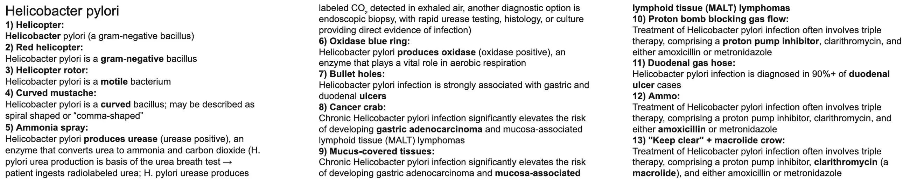
17. Brucella spp
- 1Bruce farms: Brucella spp. (gram-negative coccobacilli)
- 2Red barn: Brucella spp. are gram-negative coccobacilli
- 3Cow: Brucellosis is a notable zoonotic infection, commonly transmitted to humans through direct contact with infected animals such as cows, pigs, sheep, and goats
- 4Pig: Brucellosis is a notable zoonotic infection, commonly transmitted to humans through direct contact with infected animals such as cows, pigs, sheep, and goats
- 5Milk bucket: A significant route of Brucellosis transmission is through the consumption of unpasteurized dairy products from infected animals
- 6Open gate: Brucella spp. are facultative intracellular bacteria, capable of surviving and replicating within host macrophages
- 7Sweating + thin farmer: Acute brucellosis typically presents with nonspecific symptoms including fever, night sweats, and anorexia
- 8Undulating hills: Brucellosis is characteristically associated with undulating fever, marked by periodic intensification and remission of fever over time
- 9Liver + spleen spots: Brucella spp. preferentially infect organs of the reticuloendothelial system, like the liver and spleen, often resulting in hepatosplenomegaly
- 10Fish bones: Musculoskeletal complications, such as osteomyelitis, are among the most common sequelae of brucellosis
- 11Windmill wheel: Effective treatment for brucellosis typically involves a combination therapy of doxycycline and rifampin or doxycycline and streptomycin
- 12Rifle: Effective treatment for brucellosis typically involves a combination therapy of doxycycline and rifampin or doxycycline and streptomycin
Show the original legend picture
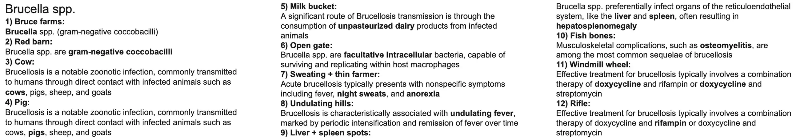
18. Staphylococcus aureus
- 1Golden staff: Staphylococcus aureus (a gram-positive coccus)
- 2Purple robe: Staphylococcus aureus is a gram-positive coccus
- 3Catalase cat: Staphylococcus aureus produces catalase (i.e. catalase positive), an enzyme that converts hydrogen peroxide into water and oxygen
- 4Coagulated river: Staphylococcus aureus produces coagulase (i.e. coagulase positive), an enzyme that converts fibrinogen to fibrin — clot formation in test samples; the coagulase test helps distinguish Staph aureus from other gram-positive, catalase-positive, coagulase-negative cocci
- 5Beta light bulb: Most strains of Staphylococcus aureus demonstrate beta-hemolysis, which refers to the ability to completely lyse hemoglobin — clear, transparent zones around colonies on blood agar
- 6Tall man in yellow: Staphylococcus aureus can ferment mannitol, which causes mannitol salt agar to turn yellow; mannitol salt agar helps distinguish Staph aureus from non-pathogenic staphylococci, which typically do not ferment mannitol
- 7"A" bound to IgG: A primary virulence factor of Staphylococcus aureus is protein A, which binds the Fc region of IgG antibodies, subsequently inhibiting complement activation and phagocytosis
- 8Nose: Staphylococcus aureus is part of the normal flora of the nares and skin
- 9Coughing + patchy cloth: Pneumonia caused by Staphylococcus aureus often manifests on a chest X-ray as patchy infiltrates that may progress to lobar consolidation
- 10Icosahedron viral lanterns: An upper respiratory infection, particularly influenza, can predispose individuals to Staphylococcus aureus pneumonia
- 11Joint bandages: Staphylococcus aureus is the most common cause of septic arthritis, which presents as a warm, swollen, and tender joint along with purulent fluid on aspiration
- 12Inflamed camel humps: Staphylococcus aureus is known to cause a range of skin and soft tissue infections, including abscesses, impetigo, furuncles, carbuncles, and cellulitis
- 13Hearts on running camel: Acute infective endocarditis, a condition that manifests as rapid onset fever, chills, tachycardia, and sepsis, can be caused by Staphylococcus aureus, even in individuals with previously undamaged heart valves
- 14Three pyramids + mortar and pestle: Tricuspid valve infective endocarditis (TVIE) caused by Staphylococcus aureus is highly associated with IV drug use
- 15Fish bones: Staphylococcus aureus is the leading cause of osteomyelitis, an inflammation or swelling of bone typically caused by infection
- 16Exfoliative burn: Certain strains of Staphylococcus aureus produce an exfoliative toxin that can lead to scalded skin syndrome, a condition characterized by widespread skin peeling
- 17Superhero cape + bolt: Some strains of Staphylococcus aureus produce a superantigen exotoxin, resulting in toxic shock syndrome (TSS); TSS is characterized by a high fever, a desquamative rash, and shock (low blood pressure and/or very high heart rate)
- 18Rapid camel running + nausea: Ingestion of preformed enterotoxin made by Staphylococcus aureus can cause a rapid-onset form of food poisoning (Sx usually develop within 30 m - 8 h), characterized by a sudden nausea, vomiting, and stomach cramps
- 19Mayo and meats: Ingestion of food contaminated with Staphylococcus aureus enterotoxin, notably items like mayonnaise and meats, can result in staphylococcal enteritis
- 20Merciful pharaoh: Certain strains of Staphylococcus aureus have developed resistance to beta-lactam antibiotics, notably including methicillin (methicillin-resistant Staphylococcus aureus (MRSA))
- 21Altered builders: MRSA strains have modified penicillin-binding proteins, which hinder the binding of beta-lactam antibiotics to bacterial cell walls
- 22Purple caravan: Vancomycin is effective against MRSA infections
- 23Pencil staff: Nafcillin, a beta-lactam antibiotic, is effective against non-MRSA Staphylococcus aureus infections
Show the original legend picture
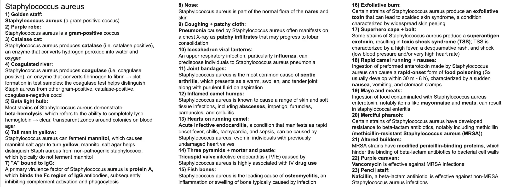
19. Bacillus anthracis & cereus
- 1King Anthra's axe: Bacillus anthracis (a gram-positive bacillus)
- 2Purple hues: Bacillus anthracis and Bacillus cereus bacteria are gram-positive bacilli
- 3Ring of fire: Cutaneous anthrax, a manifestation of Bacillus anthracis infection, typically presents as a vesicle that undergoes central necrosis, leaving a black eschar with surrounding edema
- 4Chain of ships: Bacillus anthracis and Bacillus cereus are gram-positive bacilli that frequently grow in chains
- 5"D" buckles + leather armor: The capsule of Bacillus anthracis is composed of poly-y-D-glutamic acid (a polypeptide)
- 6Aerobic bellows: Bacillus anthracis and Bacillus cereus are aerobic or facultative anaerobic bacteria
- 7Spored walnuts: Bacillus anthracis and Bacillus cereus can form metabolically inactive spores, which are resistant to various environmental stresses, including heat, radiation, and chemicals
- 8"EF" shield: The edema factor (EF) exotoxin of Bacillus anthracis is a calmodulin-dependent adenylate cyclase that converts ATP into cAMP, contributing to the establishment of infections
- 9Camps: The edema factor (EF) exotoxin of Bacillus anthracis is a calmodulin-dependent adenylate cyclase that converts ATP into cAMP, contributing to the establishment of infections
- 10"LF" shield: The lethal factor (LF) exotoxin of Bacillus anthracis acts as a protease that targets mitogen-activated protein kinase (MAPK), resulting in the disruption of cellular signaling pathways and impairment of the host's immune response
- 11"LF" viking burning map: The lethal factor (LF) exotoxin of Bacillus anthracis acts as a protease that targets mitogen-activated protein kinase (MAPK), resulting in the disruption of cellular signaling pathways and impairment of the host's immune response
- 12Sheep wool: Historically, wool sorters were at risk of contracting pulmonary anthrax, also known as "woolsorters' disease", through inhalation of spores present in animal wool, although this transmission mode is now rare in developed nations
- 13Bloody axe: Inhalational anthrax can manifest as hemorrhagic mediastinitis, and radiological examinations may show a widened mediastinum
- 14Widened mast: Inhalational anthrax can manifest as hemorrhagic mediastinitis, and radiological examinations may show a widened mediastinum
- 15Flower shield: The standard treatment for anthrax is a fluoroquinolone (ciprofloxacin, levofloxacin) or doxycycline
- 16Bicycle tire shield: The standard treatment for anthrax is a fluoroquinolone (ciprofloxacin, levofloxacin) or doxycycline
- 17Rice bowl: Bacillus cereus (a gram-positive bacillus)
- 18Vomiting: Consumption of food (especially reheated rice) contaminated with Bacillus cereus can induce symptoms like nausea, vomiting, diarrhea and abdominal cramps within ~1-6 hours after ingestion
- 19Reheating rice: Bacillus cereus infection is classically associated with reheated rice (warm temperatures — spore germination — preformed enterotoxin production— early onset food poisoning)
Show the original legend picture
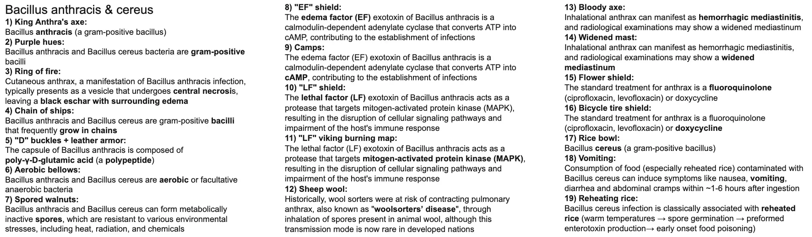
20. Clostridium perfringens
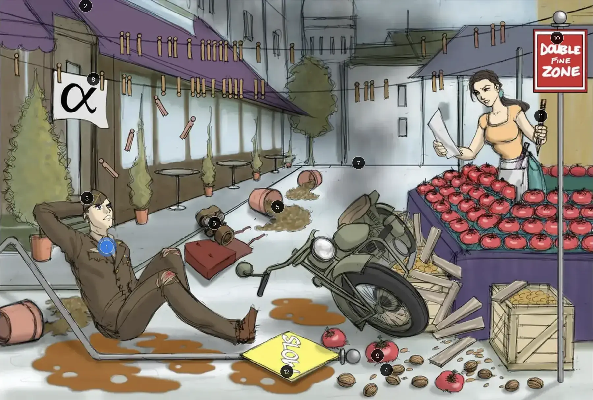
- 1Private Ringen: Clostridium perfringens (a gram-positive bacillus)
- 2Purple hues: Clostridium perfringens is a gram-positive bacillus
- 3Wounded soldier: Clostridium perfringens infections can occur in various wound types, especially those contaminated with soil or fecal matter; they have historically been associated with wounds sustained in military combat settings
- 4Spored walnuts: Clostridium perfringens can form metabolically inactive spores, which are resistant to various environmental stresses, including heat, radiation, and chemicals
- 5Soil: The spores of Clostridium perfringens are found in soil, persisting due to resistance to heat, radiation, desiccation, and disinfectants
- 6Anaerobic gas mask: Clostridium perfringens is classified as either an obligate anaerobe or aerotolerant anaerobe
- 7Gas vapor: Infections by Clostridium perfringens can lead to necrotizing skin and soft tissue conditions, potentially progressing to gas gangrene (myonecrosis)
- 8Alpha flag + phospholipid clothespins: The alpha toxin of Clostridium perfringens is a lecithinase that targets and cleaves lecithin phospholipids in cell membranes — RBC hemolysis — failure to supply oxygen to tissues
- 9Lysed tomatoes: The alpha toxin of Clostridium perfringens is a lecithinase that targets and cleaves lecithin phospholipids in cell membranes — RBC hemolysis — failure to supply oxygen to tissues
- 10"DOUBLE fine zone": Clostridium perfringens displays a distinctive double zone of hemolysis on blood agar plates due to the hemolytic activity of both its alpha and theta toxins (complete hemolysis of inner zone due to theta toxin and incomplete hemolysis of outer zone due to alpha toxin)
- 11Purple pencil: Effective management of tissue infections caused by Clostridium perfringens involves surgical debridement coupled with antimicrobial therapy, with penicillin G being a commonly preferred choice
- 12"Slow" Sign in Muddy water: Clostridium perfringens can cause food poisoning primarily associated with ingestion of its preformed toxin in improperly cooked or stored foods, leading to symptoms like watery diarrhea; symptoms usually present slowly, within 2-12 hours
Show the original legend picture
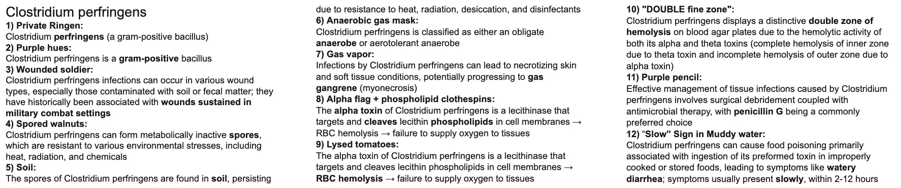
21. Escherichia coli (ETEC & EHEC)
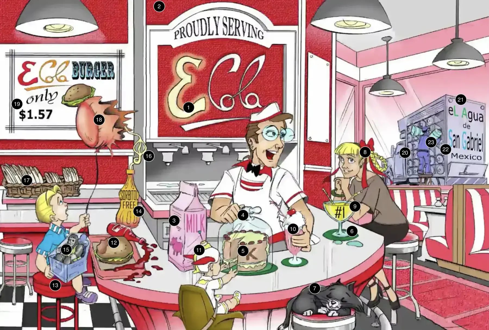
- 1E. cola: Escherichia coli (a gram-negative bacillus)
- 2Red hues: E. coli is a gram-negative bacillus
- 3Pink milk carton: E. coli is lactose-fermenting, forming pink colonies on MacConkey agar
- 4Glass capsule: Many strains of E. coli are surrounded by a polysaccharide capsule
- 5K cake + glass capsule: Some strains of E. coli express K capsule (K antigen), a key virulence factor responsible for extraintestinal infections
- 6Green coaster: E. coli typically forms distinctive metallic green colonies on eosin methylene blue (EMB) agar
- 7Catalase cat: E. coli produces catalase (i.e. catalase positive), an enzyme that converts hydrogen peroxide into water and oxygen
- 8Fimbriae ribbons: The fimbriae of E. coli facilitate adhesion to host cells, an important factor in pathogenesis
- 9"1" bladder cup: E. coli is the most common cause of urinary tract infections
- 10Blood red shake: E. coli is a major causative agent of gram-negative sepsis
- 11K cake + baby + meningitis helmet: E. coli strains possessing the K1 capsular antigen are associated with neonatal meningitis
- 12Hamburger: Enterohemorrhagic E. coli (EHEC) is often transmitted through contaminated, undercooked meat
- 13Red stool: EHEC can cause bloody diarrhea due to the damage it inflicts on the lining of the intestine, primarily through the production of Shiga-like toxins
- 14Sorbitol free soda: EHEC strains, such as 0157:H7, are characterized by their inability to ferment sorbitol, differentiating them from most other E. coli strains
- 15She-gorilla toy: EHEC produces a Shiga-like toxin, with effects nearly identical to the Shiga toxin of Shigella dysenteriae, leading to the inactivation of the 60S ribosomal subunit in host cells — disruption of protein synthesis
- 16Glomerular straw: Shiga-like toxin can cause hemolytic uremic syndrome (HUS) due to cytotoxic effects on endothelial cells of the capillaries in the glomerulus; this damage triggers a series of events including the aggregation of platelets, leading to thrombocytopenia, microangiopathic hemolytic anemia (MAHA), and acute kidney injury
- 17Plate aggregation: Shiga-like toxin can cause hemolytic uremic syndrome (HUS) due to cytotoxic effects on endothelial cells of the capillaries in the glomerulus; this damage triggers a series of events including the aggregation of platelets, leading to thrombocytopenia, microangiopathic hemolytic anemia (MAHA), and acute kidney injury
- 18Popped red balloon: In MAHA, a part of HUS, red blood cells are mechanically lysed and fragmented into schistocytes as they pass through small, damaged blood vessels filled with clots, leading to a reduction in their overall count
- 19"Only $1.57": E. coli 0157:H7 is an enterohemorrhagic E. coli serotype that produces Shiga-like toxin, which can cause bloody diarrhea and hemolytic uremic syndrome (HUS)
- 20Water truck: Enterotoxigenic E. coli (ETEC) is a common cause of "traveler's diarrhea," presenting with symptoms such as watery diarrhea, abdominal cramping, nausea, and vomiting transmitted via water sources
- 21eL Agua: Certain strains of ETEC produce a heat-labile toxin (LT), leading to increased adenylyl cyclase activity — elevated cAMP levels — inhibited absorption of sodium and chloride and increased secretion of chloride and water — secretory (watery) diarrhea
- 22San Gabriel: Some strains of ETEC synthesize a heat-stable toxin (ST) that elevates guanylate cyclase activity — elevated cGMP levels — increased chloride secretion and reduced sodium absorption — secretory (watery) diarrhea
- 23Spilling water: ETEC is a common cause of "traveler's diarrhea," presenting with — watery diarrhea, abdominal cramping, nausea, and vomiting
Show the original legend picture
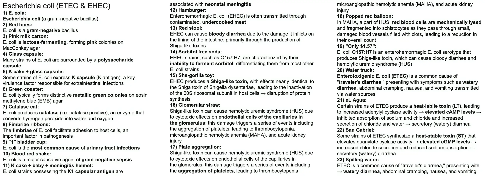
22. Vibrio spp
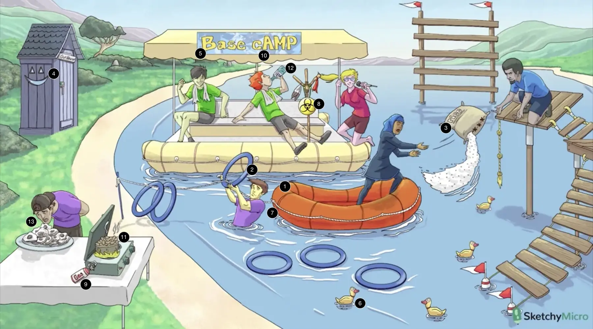
- 1Red canoe: Vibrio bacteria are comma-shaped, gram-negative, oxidase-positive bacilli
- 2Blue rings: Vibrio bacteria are comma-shaped, gram-negative, oxidase-positive bacilli (produces oxidase, an enzyme that plays a vital role in aerobic respiration)
- 3Bags of rice: Vibrio cholerae can cause profuse watery diarrhea, commonly referred to as "rice-water" diarrhea
- 4Outhouse: Vibrio cholerae is transmitted fecal-orally via contaminated water or food, especially in areas with poor sanitation
- 5BASE: Vibrio bacteria preferentially grow in alkaline (basic) media
- 6Yellow ducks with lemon shaped bodies: Vibrio bacteria are extremely acid-labile, requiring a high infectious dose, and patients with reduced stomach acidity (e.g., those on proton pump inhibitors or with pernicious anemia) are more susceptible
- 7Raft rope attached to river shore: The toxin-coregulated pilus of Vibrio cholerae allows the bacteria to attach to (but do not invade) the intestinal mucosa
- 8"Toxic" symbol: Cholera toxin permanently activates Gs protein — overactivation of adenylate cyclase — ft cAMP in intestinal epithelial cells > activation of CFTR channels — f¢ CI secretion into the lumen — lumen becomes negatively charged — Nat follows the electrochemical gradient into the lumen — water follows Na* osmotically — profuse watery "rice-water' diarrhea.
- 9GaS stove: Cholera toxin permanently activates Gs protein — overactivation of adenylate cyclase — ft cAMP in intestinal epithelial cells > activation of CFTR channels — ¢ CI secretion into the lumen — lumen becomes negatively charged — Nat follows the electrochemical gradient into the lumen — water follows Na* osmotically — profuse watery "rice-water' diarrhea.
- 10cAMP: Cholera toxin permanently activates Gs protein — overactivation of adenylate cyclase — ¢ cAMP in intestinal epithelial cells — activation of CFTR channels — ¢ CI secretion into the lumen — lumen becomes negatively charged — Nat follows the electrochemical gradient into the lumen — water follows Na* osmotically — profuse watery "rice-water' diarrhea.
- 11Salty peanut water: Cholera toxin permanently activates Gs protein — overactivation of adenylate cyclase — ¢ cAMP in intestinal epithelial cells > activation of CFTR channels — 7 CI secretion into the lumen — lumen becomes negatively charged — Nat follows the electrochemical gradient into the lumen — water follows Na* osmotically — profuse watery "rice-water' diarrhea.
- 12Drinking water: Oral rehydration is the primary treatment of cholera; antibiotics and IV fluids are reserved for severe cases
- 13Eating oysters: Vibrio parahaemolyticus and Vibrio vulnificus are marine bacteria that can infect humans through ingestion of contaminated seafood, especially raw oysters, or via open wounds exposed to seawater. V. parahaemolyticus is the most common food-related Vibrio infection in the United States, typically causing self-limited gastroenteritis. Vibrio vulnificus is the most deadly Vibrio species, causing severe wound infections and sepsis with fever, chills, hypotension, and large fluid-filled bullae that can become necrotic and progress to necrotizing fasciitis
Show the original legend picture
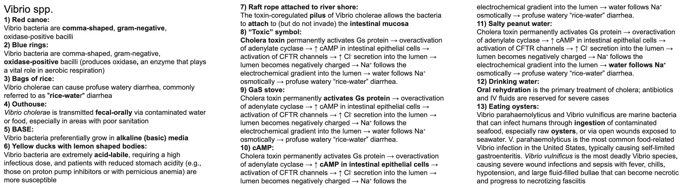
23. Campylobacter jejuni
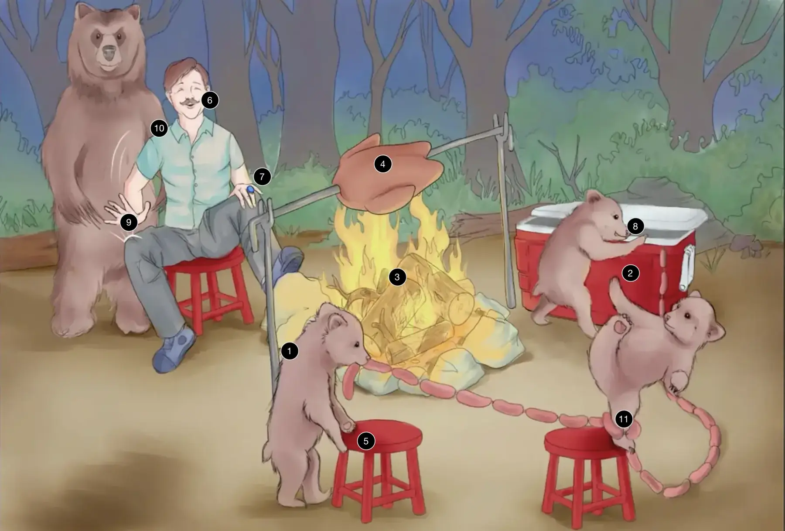
- 1Camping bears: Campylobacter jejuni (a gram-negative bacillus)
- 2Red rod-shaped cooler: Campylobacter jejuni is a gram-negative bacillus
- 3Fire: Campylobacter jejuni is a thermophilic bacterium, prefers to grow in heat, growing optimally at around 42°C
- 4Chicken: Campylobacter jejuni resides in the intestinal tract of animals, especially poultry, and transmission to humans occurs via the fecal-oral route, often during the slaughtering process. Common reservoirs include poultry, cattle, sheep, and dogs.
- 5Red stool: Symptoms of Campylobacter jejuni infection include cramping, abdominal pain, fever, and diarrhea, which is often bloody, if bacteremia occurs, patients may develop systemic signs such as high fever, chills, malaise, hypotension, and confusion
- 6Curved mustache: Campylobacter jejuni is a curved bacillus, often described as having a "seagull wing" shape on microscopy
- 7Blue oxidase ring: Campylobacter jejuni produces oxidase (i.e. oxidase positive), an enzyme that plays a vital role in aerobic respiration
- 8Bear invading cooler: Campylobacter jejuni invades the epithelial cells of the gastrointestinal tract, penetrating the gut mucosa, which can lead to diarrhea and, in some cases, entry into the bloodstream resulting in bacteremia
- 9Slapping knee: Campylobacter jejuni infection is associated with reactive arthritis (Reiter's syndrome), a seronegative spondyloarthropathy, a condition characterized by joint pain and swelling that occurs after certain bacterial infections
- 10Guy and the bears: Campylobacter jejuni infection is a common trigger of Guillain-Barré syndrome, a post-infectious autoimmune disorder causing demyelination of peripheral nerves, progressive bilateral ascending weakness, and areflexia
- 11Sausage links around ankle: Campylobacter jejuni infection is a common trigger of Guillain-Barré syndrome, a post-infectious autoimmune disorder causing demyelination of peripheral nerves, progressive bilateral ascending weakness, and areflexia
Show the original legend picture
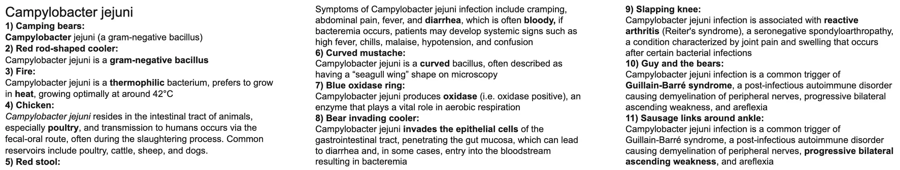
24. Yersinia enterocolitica & pestis
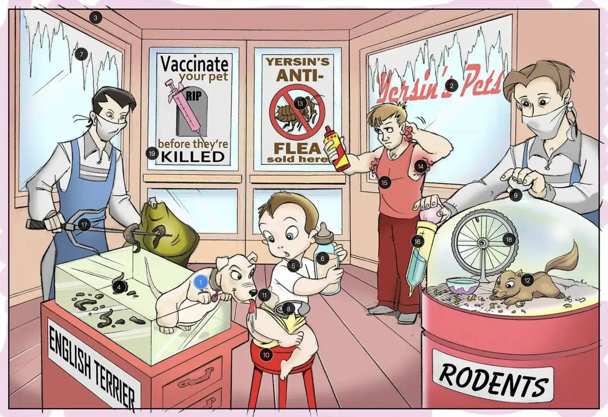
- 1English terrier: Yersinia enterocolitica (a gram-negative bacillus)
- 2"Yersin's pets": Yersinia pestis (a gram-negative bacillus)
- 3Red hues: Yersinia pestis and Yersinia enterocolitica are gram-negative bacilli
- 4Puppy poop: Yersinia enterocolitica is part of the normal intestinal flora of dogs and can be transmitted via dog feces
- 5Daycare-aged toddler: Outbreaks of Yersinia enterocolitica can occur in daycare settings due to fecal-oral transmission and most commonly affected demographics are infants, young children, older adults, and immunocompromised individuals
- 6Milk: Y. enterocolitica can be transmitted through improperly handled or contaminated milk and dairy products
- 7Icicles: Y. enterocolitica can survive at refrigeration temperatures (=0 °C), posing food safety risks
- 8Safety pin: Y. pestis and Y. enterocolitica show bipolar (safety-pin) staining, in which the two ends of the rod-shaped bacteria stain much more intensely than the central region under microscopy
- 9Glass capsule: Both Y. pestis and Y. enterocolitica possess a capsule
- 10Red stool: Y. enterocolitica causes fever, abdominal pain, and bloody diarrhea
- 11Licking abdomen: Y. enterocolitica infection may mimic appendicitis (pseudoappendicitis) with RLQ pain
- 12Rodent: Rodents (rats, prairie dogs) are primary reservoirs for Y. pestis
- 13Flea: Fleas transmit Y. pestis between animals and humans
- 14Armpit lumps: Painful swollen lymph nodes (buboes) are classic for bubonic plague (Y. pestis)
- 15Red shirt: Disseminated Y. pestis infection — tissue necrosis, DIC, cutaneous hemorrhage, septic shock, multi-organ failure
- 16Turkey baster: Yersinia spp. use possess a type Ill secretion system, a needle-like apparatus used to inject Yops (Yersinia associated outer proteins) into host cells; these proteins help the bacteria evade host immune responses and promote their invasion and intracellular survival
- 17Sai: Aminoglycosides (esp. streptomycin) treat Yersinia infections
- 18Bicycle tire: Tetracyclines are also effective against Yersinia spp.
- 19"Vaccinate + KILLED": An inactivated (killed) Y. pestis vaccine exists, used only for high-risk individuals (lab workers, endemic field workers, etc.)
Show the original legend picture
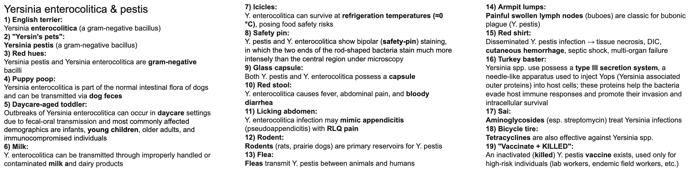
25. Clostridioides difficile
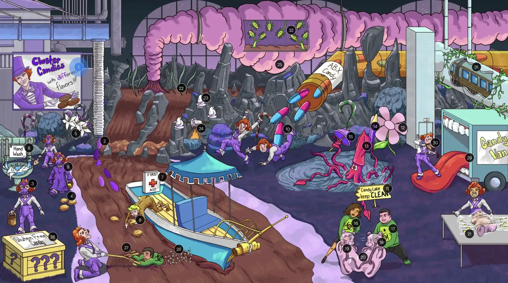
- 1Walnuts: Clostridioides difficile forms spores that are metabolically inactive and highly resistant to environmental stresses (e.g., heat, radiation, and chemical agents) — persist in hospital environments and contaminate surfaces, contributing to its transmission
- 2"Clean" sign with washing hands over chocolate machine: C. difficile is primarily a nosocomial (hospital-acquired) infection. Spores are easily transferred from patient to patient via contaminated hands or surfaces. Antibiotics, especially clindamycin, fluoroquinolones, cephalosporins, and penicillins, disrupt the normal gut flora, allowing C. difficile to colonize the colon and produce toxins that cause diarrhea
- 3Workstation A and workstation B: C. difficile produces two major exotoxins, Toxin A (TcdA) and Toxin B (TcdB) — responsible for the pathogenesis of infection
- 4"A - Apples" sign: Toxin A binds to the brush border of intestinal epithelial cells, leading to inflammation, cell death, and watery diarrhea. It is primarily enterotoxic, causing fluid secretion and mucosal damage
- 5Employee picking up the apple and brushing chocolate on them: Toxin A binds to the brush border of intestinal epithelial cells, leading to inflammation, cell death, and watery diarrhea. It is primarily enterotoxic, causing fluid secretion and mucosal damage
- 6Chocolate filled machine: Toxin A binds to the brush border of intestinal epithelial cells, leading to inflammation, cell death, and watery diarrhea. It is primarily enterotoxic, causing fluid secretion and mucosal damage
- 7"B - Black Licorice" sign: Toxin B disrupts the actin cytoskeleton of enterocytes by depolymerizing actin filaments, causing cell rounding and death. The damage to the mucosa leads to necrosis and the formation of a yellowish-grey pseudomembrane composed of fibrin, mucus, and dead cells, characteristic of pseudomembranous colitis.
- 8Black Licorice: Toxin B disrupts the actin cytoskeleton of enterocytes by depolymerizing actin filaments, causing cell rounding and death. The damage to the mucosa leads to necrosis and the formation of a yellowish-grey pseudomembrane composed of fibrin, mucus, and dead cells, characteristic of pseudomembranous colitis.
- 9Little kid chewing them apart: Toxin B disrupts the actin cytoskeleton of enterocytes by depolymerizing actin filaments, causing cell rounding and death. The damage to the mucosa leads to necrosis and the formation of a yellowish-grey pseudomembrane composed of fibrin, mucus, and dead cells, characteristic of pseudomembranous colitis.
- 10Worker packing the licorice in sheets of yellowish plastic: Toxin B disrupts the actin cytoskeleton of enterocytes by depolymerizing actin filaments, causing cell rounding and death. The damage to the mucosa leads to necrosis and the formation of a yellowish-grey pseudomembrane composed of fibrin, mucus, and dead cells, characteristic of pseudomembranous colitis.
- 11Worker holding up chocolate covered shoe: Diagnose C. difficile infection by testing stool for toxin-producing strains using NAAT (nucleic acid amplification, usually PCR, detects toxin-encoding genes) or or EIA (enzyme immunoassays for toxins A and B)
- 12Gas mask: C. difficile is an obligate anaerobe (cannot survive in oxygen-rich environments), thus infections primarily occur in the colon
- 13Violet: C. difficile is a gram-positive bacillus
- 14Van with the mouth like opening: Oral vancomycin is first-line therapy for Clostridioides difficile infection; it remains largely within the gut lumen, directly targeting the bacteria and their toxins while minimizing systemic absorption
- 15Train: IV metronidazole is used for severe C. difficile infections —> achieves systemic levels that can reach inflamed or compromised colonic tissue, complementing local gut-directed therapy
Show the original legend picture
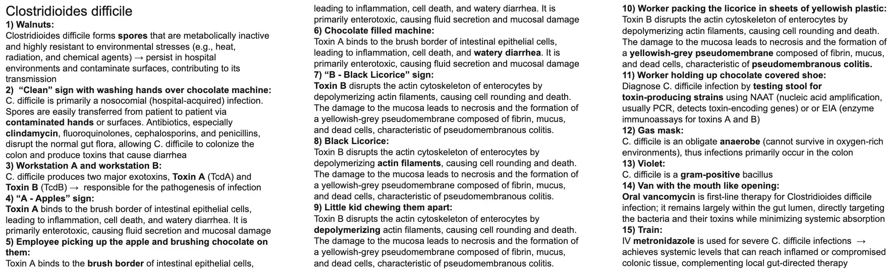
26. Salmonella Intro to Salmonella & NTS
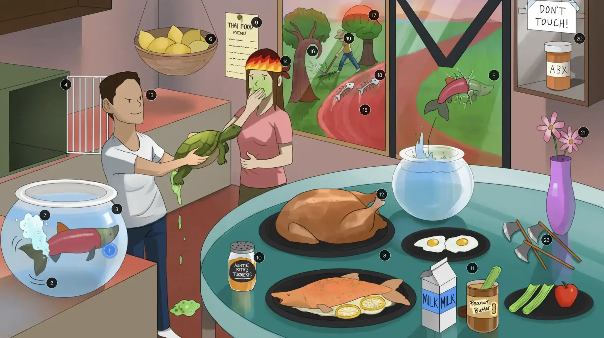
- 1Red rod salmon: Salmonella is a gram-negative rod
- 2Swimming salmon: Salmonella utilizes peritrichous flagellar motility
- 3Fishbowl capsule: Salmonella produces a protective polysaccharide capsule (O-antigen capsule)
- 4Open cage: Salmonella is capable of surviving and reproducing inside or outside of host macrophages (facultative intracellular)
- 5Salmo crossing M window: Invasive Salmonella serotypes (all typhoidal and some NTS bacteria) cross the intestinal barrier through enterocytes and M cells (specialized epithelial cells that overly lymphoid tissue of Peyer's patches)
- 6Lemons: Salmonella is acid-labile = mechanism of host resistance
- 7Farting salmon: Salmonella produces hydrogen sulfide gas (H2S) — black colonies on certain growth media
- 8Black plates: Production of hydrogen sulfide gas (H2S) — black colonies on Hektoen enteric agar
- 9"Thai Food": Typhoidal Salmonella (TS) serotypes: Salmonella Typhi and Salmonella Paratyphi
- 10"Auntie Rita's" Turmeric: Nontyphoidal Salmonella (NTS) includes many serotypes other than S. Typhi and S. Paratyphi (Salmonella Enteritidis and Salmonella Typhimurium are the most common)
- 11Smorgasbord: NTS is associated with water and foodborne illness (including numerous fresh and processed foods)
- 12Chicken and eggs: NTS is zoonotic and poultry (e.g. chicken, eggs) are the primary reservoir
- 13Turtle handler: Animal contact (reptiles, amphibians) can transmit NTS — nontyphoidal Salmonella infection
- 14Queasy kid with flame bandana: Self-limited gastroenteritis (fever, nausea, vomiting, abdominal cramps, diarrhea) is the most common presentation of NTS infection
- 15Red river: Extraintestinal NTS — bloodstream infection — severe sepsis or death
- 16Aorta tree: Extraintestinal NTS — bloodstream infection — disseminated infection (endovascular infection, meningitis, osteomyelitis)
- 17Glowing brain tree: Extraintestinal NTS — bloodstream infection — disseminated infection (endovascular infection, meningitis, osteomyelitis)
- 18Fish bones: Extraintestinal NTS — bloodstream infection — disseminated infection (endovascular infection, meningitis, osteomyelitis)
- 19Sickling guy: Osteomyelitis is a complication of disseminated invasive NTS in patients with sickle cell disease and other underlying conditions.
- 20"Don't touch" Abx: NTS gastroenteritis is a self-limited infection; manage with supportive care, as antibiotics are generally not indicated
- 21Flowers: Fluoroquinolones are the preferred antibiotic for NTS (to prevent invasive NTS when indicated and to treat invasive NTS infections)
- 223 axes: 3rd Generation Cephalosporins (e.g. ceftriaxone) are an alternative antibiotic with coverage for NTS (to prevent invasive NTS when indicated and to treat invasive NTS infections)
Show the original legend picture
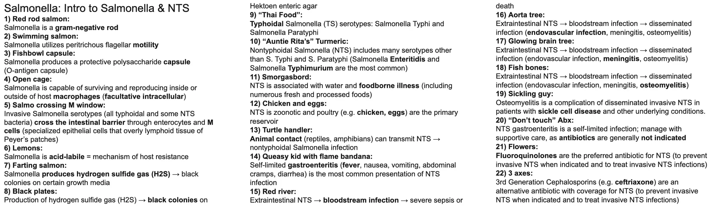
27. Salmonella Typhoidal Salmonella
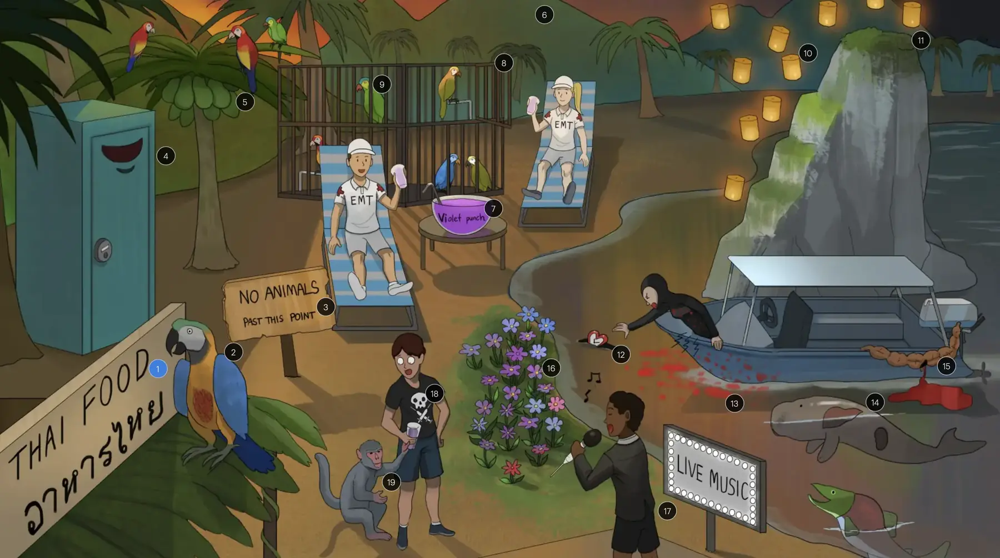
- 1Thai Food sign: Salmonella Typhi and Salmonella Paratyphi are typhoidal Salmonella (TS) serotypes, which cause enteric (typhoid) fever in humans
- 2Parrot: Salmonella Typhi and Salmonella Paratyphi are typhoidal Salmonella (TS) serotypes, which cause enteric (typhoid) fever in humans
- 3"No animals" sign: Humans are the exclusive reservoir of TS
- 4Outhouse: TS infections are acquired through consumption of food or water contaminated by human feces (fecal-oral route)
- 5Parrots in papaya tree: TS infections can lead to colonization of the gallbladder > chronic, asymptomatic carrier state
- 6Thai mountains: TS infections predominantly occur in developing countries, which may be affected by poor sanitation (i.e., endemic regions are found in South-Central and East Asia and Southern Africa)
- 7Vi-olet punch: TS bacteria possess the Vi polysaccharide capsular antigen — resist host defenses (blunt neutrophilic response: inhibit neutrophil chemotaxis, opsonization, and oxidative burst)
- 8MacroCAGE: TS initiates a monocytic immune response: monocytes (i.e, macrophages) get recruited to areas that harbor TS bacteria, such as Peyer patches)
- 9Caged parrots: TS bacteria undergo extensive proliferation within macrophages
- 10Flaming lanterns: Fever is a classic, early sign of TS infection
- 11Stepwise rock island: Enteric fever begins with a stepwise rising fever with high plateau
- 12Fallen heart watch: Relative bradycardia (a heart rate lower than expected for a given body temperature) is a characteristic feature of enteric fever that typically develops in the first week of illness
- 13Red algae: Flat, rose-colored macules ("rose spots") may develop on the chest and abdomen in enteric fever (typically during the second week of illness)
- 14Dugong with liver and spleen spots: Sepsis, hepatosplenomegaly, and intestinal bleeding and perforation may develop in the third week of enteric fever if left untreated
- 15Leaking intestine engine: Sepsis, hepatosplenomegaly, and intestinal bleeding and perforation may develop in the third week of enteric fever if left untreated
- 16Flowers: Enteric fever requires treatment with an antibiotic, typically a fluoroquinolone
- 17"LIVE music" sign + syringe mic: A live attenuated vaccine is taken orally to protect against enteric fever
- 18Skull and Syringe shirt + Vi-olet punch: The Vi capsular polysaccharide vaccine is administered as an injection to protect against enteric fever
- 19Rhesus + Vi-olet punch: The conjugate vaccine (Vi capsular polysaccharide vaccine linked to Tetanus toxoid protein) is administered as an injection to provide robust protection against enteric fever
Show the original legend picture
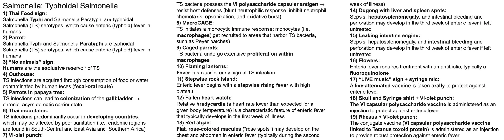
28. Shigella spp
- 1She-gorilla: Shigella spp. (gram-negative bacilli)
- 2Red hues: Shigella spp. are gram-negative bacilli
- 3Green tutu: On Hektoen enteric agar (HE), Shigella spp. often form blue-green colonies because they do not produce hydrogen sulfide (H,S); in contrast, Salmonella spp. are characterized by black colonies on HE, which result from their ability to generate H,S
- 4Chained she-gorilla: Shigella spp. are immotile bacteria
- 5Protected from acid: Shigella spp. have increased resistance to gastric acid compared to many other bacteria, enabling infection at lower inocula
- 6Motion tail: Shigella spp. induce apoptosis in host cells and manipulate eukaryotic cytoskeletal actin filaments to move intracellularly, making them facultative intracellular bacteria
- 7"M" pad: Shigella spp. invade M cells within the Peyer's patches of the gastrointestinal mucosa
- 8Red stool: The main sign of shigellosis is diarrhea, which often is bloody
- 9Inflammatory flames: The diarrhea associated with shigellosis is often inflammatory, evidenced by the presence of leukocytes in the stool
- 10Glomerular knot: In rare cases, Shiga toxin produced by Shigella dysenteriae type 1 can cause hemolytic uremic syndrome (HUS) due to cytotoxic effects on endothelial cells of the capillaries in glomeruli; this damage triggers a series of events including the aggregation of platelets, leading to thrombocytopenia, microangiopathic hemolytic anemia (MAHA), and acute kidney injury
- 11Popped red balloon: In MAHA, a part of HUS, red blood cells are mechanically lysed and fragmented into schistocytes as they pass through small, damaged blood vessels filled with clots, leading to a reduction in their overall count
- 12Aggregation of plates: In rare cases, Shiga toxin produced by Shigella dysenteriae type 1 can cause hemolytic uremic syndrome (HUS) due to cytotoxic effects on endothelial cells of the capillaries in glomeruli; this damage triggers a series of events including the aggregation of platelets, leading to thrombocytopenia, microangiopathic hemolytic anemia (MAHA), and acute kidney injury due to impaired renal function
- 13Young ringmaster: HUS occurs more commonly in children under 5 years of age
- 1460S sand timer: Shiga toxin produced by Shigella dysenteriae, which is structurally and functionally similar to Shiga-like toxin of enterohemorrhagic E. coli, acts by inactivating the 60S ribosomal subunit, leading to inhibition of protein synthesis
- 15Turkey baster: Shigella spp. possess a type Ill secretion system, a needle-like apparatus used to inject effector proteins into host cells; these proteins help the bacteria evade host immune responses and promote their invasion and intracellular survival
Show the original legend picture
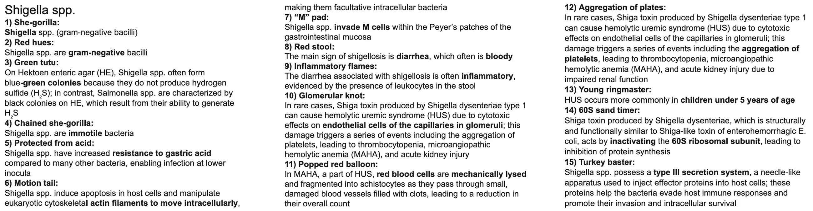